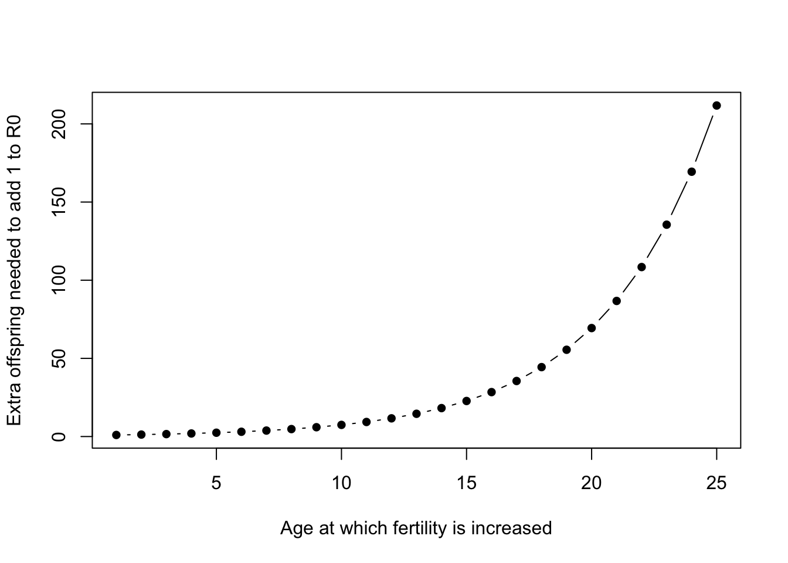
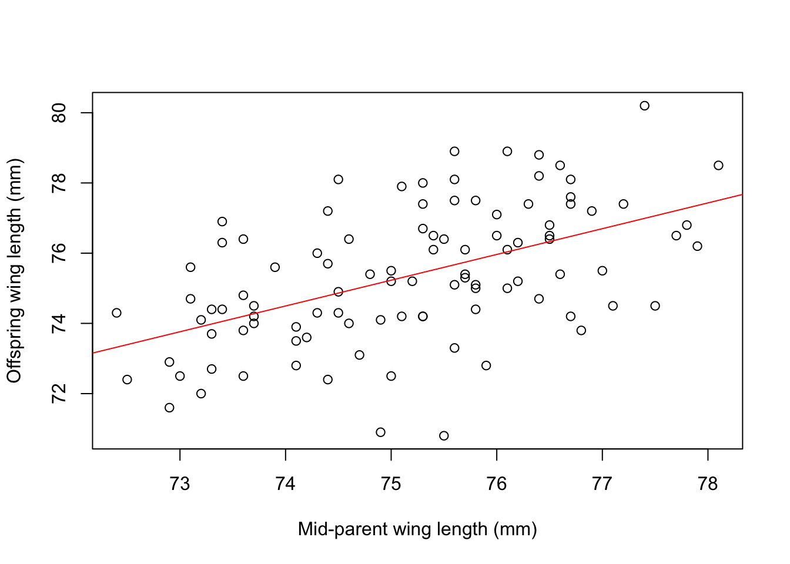
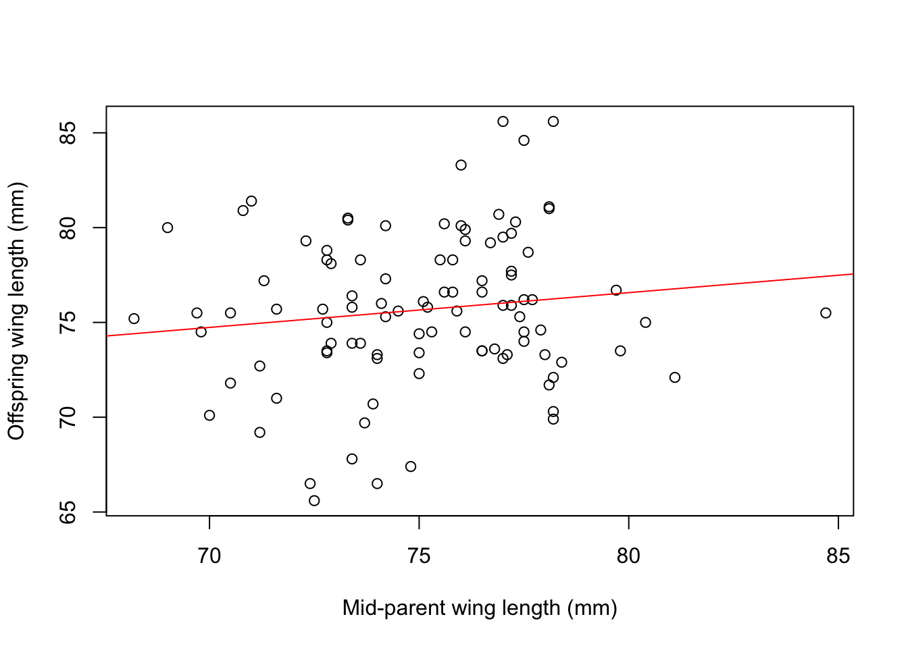

26 Solutions and “take-home” messages
In this section you will find the solutions and/or main take home messages of the practical exercises used in this course.
26.1 How to use this section
Use these solutions to check your reasoning after you attempt the tasks. If your answer differs, focus on the logic rather than the final number.
26.2 Solutions: The blind watchmaker
- Predictions and the default run
With selection on, one example run using Dawkins’ 28-character phrase and 27 possible characters reached the target at generation 66. The number varies between runs: in 5,000 simulated runs the median was 98 generations, and 90% of runs finished between about 60 and 166 generations. Compare this with single-step selection, where you would expect to need about \(27^{28} \approx 10^{40}\) attempts.
- What happens if selection is turned OFF?
Each generation is then a completely new random guess (single-step selection), and nothing is kept from one generation to the next. The output stays random nonsense. The chance of hitting the whole phrase in any one generation is \((1/27)^{28} \approx 8 \times 10^{-41}\), so in practice it never happens.
- Does the number of generations affect whether the target phrase is reached?
Yes. With 100 generations, only about half of runs (about 52%) reach this phrase; with 200 generations almost all do (about 99%). The last letters to be fixed are the slow part: each wrong letter has only a 1 in 27 chance of being right in any one generation.
- Does the speed of reaching the target phrase depend on the length of the phrase?
Yes, but much less than you might expect. Longer phrases take more generations, because there are more letters that all have to be fixed, but the increase is small: “I LOVE SCIENCE” (14 characters) takes a median of about 81 generations, the 28-character weasel phrase about 98, and the 53-character “WITH YOUR FEET ON THE AIR AND YOUR HEAD ON THE GROUND” about 117. With single-step selection, every extra character makes success 27 times less likely.
- How does this simulation differ from real natural selection?
- Natural selection has no long-term goal or target. Here, every phrase is judged by how close it is to a fixed target that is decided in advance. In nature, individuals are “judged” only by how well they survive and reproduce in their current environment.
- The intermediate phrases have no use of their own: “METHINKS IT IS LIKE A WXASEL” is only better because it is closer to the target. In evolution, every intermediate form (for example, each stage in the evolution of an eye) must itself work well enough to survive and reproduce.
- The simulation judges each letter separately, with perfect knowledge of the right answer, and a correct letter can never be lost again. There is no population, no reproduction and no inheritance. Real selection acts on whole organisms in a population, and favourable variants can still be lost by chance.
The important lesson still holds: random variation combined with cumulative selection can produce outcomes that would be impossible by chance alone.
26.3 Solutions: Bug hunt camouflage
- Predictions
Typical good predictions: the average colour will move towards the background colour; it will take longer to catch 10 bugs as time goes on; after switching background, catching will suddenly become easy again, and the bugs will then start to evolve towards the new background. Students who predicted that individual bugs would change colour have met a key misconception (see the genotype question below).
- What happens to the average colour of the bug population with time as you hunt? Was your prediction correct?
The colour evolves to become more similar to the background colour because you (the hunter) find it harder to find these better-camouflaged individuals.
- What happens to your hunting efficiency? Use your measurements.
Your hunting efficiency tends to decrease with time because the bugs are evolving to be harder to see. They are evolving camouflaged colours. In your measurements, the time to catch 10 bugs should increase over the first two minutes, drop sharply when you switch background (the bugs are suddenly conspicuous), and then increase again as the bugs adapt to the new background. The exact times differ between students, because each of you is a different predator, but the pattern should usually be the same.
- Apart from bug evolution, what else could change how long it takes you to catch 10 bugs? Which of the plots gives more direct evidence that the bugs themselves have evolved?
You, the predator, also change: you learn where to look and get faster (catch times fall), you get tired or bored (catch times rise), and a new background can be distracting at first, or make you concentrate harder. So catch time mixes changes in the bugs with changes in you, and a student whose times did not rise has not shown that evolution failed. The direct evidence that the bugs evolved is in the colour plots (the histograms of the colour values and the change in average genotype): the distribution of colours in the population shifts towards the background.
- Would you say that the bug population becomes worse or better adapted to their environment?
The population becomes better-adapted to their environment with time.
- Can you explain how this happens?
You (the hunter) kill the most obvious bugs first (i.e. those with contrasting colours to the background). These are the individuals that are not well-adapted to the environment. The survivors have offspring that are similar to them, while the ones you kill leave no offspring. So as time goes on, the population becomes dominated by individuals that are well-camouflaged.
- After simulating in one environment (e.g. poppy field) for a few minutes, pause then switch to another environment. Are the bugs now well- or poorly-adapted to their environment?
Changing the environment means that the individuals are now poorly-adapted to their environment. This is because the individuals now find themselves in an environment that they did not evolve in. Their evolved camouflage does not work so well in a new environment.
- Do the genotypes of individuals change (e.g. with individual age)?
No, individuals’ genotypes are fixed: with “show-genotype?” switched on, each bug keeps the same three numbers for its whole life. The change in the population occurs because of selection of individuals to reproduce. Better-adapted individuals are more likely to reproduce.
- Increasing the “max-mutation-step” makes bug offspring less like their parents. How do you think this will influence the speed of adaptation of the bugs?
Increasing the amount of variation in offspring will tend to speed up adaptation. However, there are limits: too much variation can cause maladaptation of offspring. For example, if a parent is well-adapted (perfectly camouflaged), too much variation in offspring could lead to some offspring being poorly-camouflaged and therefore vulnerable to predation.
- Where do you see each of the four conditions in the model? Where does new variation come from?
- Individuals vary in a trait: the bugs differ in colour.
- Individuals vary in reproductive success: bugs that you catch leave no more offspring; survivors may be chosen to reproduce.
- The trait affects reproductive success: colours that contrast with the background are caught first, so they are less likely to survive and reproduce.
- The trait is inherited: offspring get their colour genes from their parent.
New variation comes from mutation: each offspring’s colour genes can differ slightly from its parent’s (the “max-mutation-step” slider). Mutation is not one of the four conditions; it supplies the variation that condition 1 needs.
- Newborn bugs start very small. Could this let some bugs escape for reasons that have nothing to do with their colour? How might that affect the results?
Yes. A newborn bug is hard to see because it is small, whatever its colour, so for a short time it escapes for a reason that has nothing to do with camouflage. This adds chance to who survives and weakens selection on colour slightly. It does not stop camouflage evolving, because every bug is small only briefly and colour still matters once it has grown.
- How does this model differ from a real predator–prey system? Give at least two differences.
Possible answers: there is only one predator, and it does not evolve (although you do learn!); reproduction is asexual, with one parent and no recombination; the population size is fixed, so there is no population growth or decline; bugs do not move or choose where to rest; the only selection is predation on colour, whereas real prey face many other pressures (temperature, food, mates); generations overlap in an unusual way, because one offspring is born each time a bug is caught.
- Optional extension: gene flow and local adaptation
With a small “offspring-distance”, offspring stay close to their parents, so bugs in each patch of background are mostly the descendants of bugs that survived in that patch: each patch can evolve its own matching colour (local adaptation). With a large “offspring-distance”, offspring are scattered across the whole background. This is like frequent gene flow between populations: well-camouflaged colours from one patch keep arriving in patches where they stand out, so local adaptation is weaker or absent. Whether gene flow swamps local adaptation depends on how much movement there is compared with the strength of selection.
26.4 Solutions: Geometric growth
You can find the completed Excel file here.
Take home messages:
- The rate of exponential/geometric growth depends on the population growth rate.
- Lambda (\(\lambda\)) values \(<1\) lead to a exponential decrease, while values \(>1\) lead to exponential growth. A \(\lambda\) of 1 indicates no change.
- Exponential growth is unlimited. This is unrealistic because very soon competition (what Darwin called “The struggle for existence”) will soon take effect as the population runs out of space or resources. Nevertheless, the model is useful and realistic for some limited situations (e.g. early population growth for new invaders)
- Growth trajectories can be plotted on the natural scale or on a log scale. Exponential growth (or decline) plotted on a log scale is a straight line. This could be useful to infer biological processes (or the lack of them). For example, exponential growth in population size indicates that there are no forces currently limiting the population (e.g. predators/competition/management actions).
- The slope of the population growth on the natural log scale can tell you what \(\lambda\) is. The “opposite” of ln is exp, so you can ask Excel to calculate
=EXP(slope).
Answers to the task:
- Steps 1-2: with \(N_0 = 10\) and \(\lambda = 1.1\), the population reaches 16.1 at \(t = 5\) and 67.3 at \(t = 20\). Plotted against time, N curves upwards ever more steeply.
- Steps 3-4: plotting ln(N) against time turns the curve into a straight line. A constant proportional increase each time step becomes a constant absolute increase on the log scale.
- Step 5: with \(\lambda = 1.2\) the curve rises faster (steeper straight line on the log plot); with \(\lambda = 0.8\) the population declines towards zero (straight line sloping downwards on the log plot); with \(\lambda = 1\) the population stays at 10 (flat line). \(\lambda = 1\) is the boundary between growth and decline: the population exactly replaces itself each time step (\(R_m = 0\)).
- Step 6: the trendline slope is 0.0953 = ln(1.1), and
=EXP(0.0953)returns 1.1, the \(\lambda\) you used. The slopes for \(\lambda\) = 0.8, 1 and 1.2 are -0.223, 0 and 0.182. If you get a different slope, check that you fitted the trendline to thelogN(natural log) column, not to N on a logarithmic axis. - Step 7 (doubling time): with \(\lambda = 1.1\) the population passes 20 between \(t = 7\) (\(N = 19.5\)) and \(t = 8\) (\(N = 21.4\)), and passes 40 about 7 time steps later. The doubling time is \(t_d = \ln 2 / \ln 1.1 = 0.693/0.0953 = 7.27\) time steps. It does not depend on the starting population size: a geometrically growing population doubles at a constant interval, whatever its size.
- Geometric series: \(N_5 = 10 \times 1.1^5 = 16.1\), the same as the spreadsheet. After 900 generations, \(N_{900} = 10 \times 1.1^{900} \approx 1.8 \times 10^{38}\). That is absurdly large (far more individuals than there are atoms in a human body, around \(10^{27}\)), which shows why unlimited geometric growth cannot continue for long in reality.
Answers to the questions:
- Constant growth rate: the population is multiplied by the same factor each time step, so it grows by the same proportion each step and by ever-larger numbers. For example, with \(\lambda = 1.1\) the population grows by 10% each step: from 10 to 11 in the first step, but from 61.2 to 67.3 between steps 19 and 20. It also doubles at a constant interval: \(\ln 2 / \ln 1.1 \approx 7.3\) time steps.
- Why unrealistic: it assumes density independence (unlimited resources and space; competition, predation or disease do not increase as the population grows), constant birth and death rates and so a constant \(\lambda\) every year (no environmental variation), no time lags, no age or stage structure (all individuals are identical), and a closed population (no immigration or emigration). Real populations eventually run out of resources and growth slows.
- Where it might be suitable: the early stages of growth when a population is small relative to its resources, e.g. an invasive species newly arrived in a suitable habitat, a population recovering after a crash or after protection (e.g. some seal or raptor populations), or bacteria in fresh culture medium.
- Decline of 25% per year: this means \(\lambda = 0.75\), so \(N_4 = 800 \times 0.75^4 = 253.1\), i.e. about 253 individuals.
- \(\lambda\) per half-year: \(r_m = \ln 1.1 = 0.0953\) per year, so \(r_m = 0.0477\) per half-year, and \(\lambda = e^{0.0477} = 1.049\) per half-year. Check: \(1.049^2 = 1.1\). (Simply halving the 10% increase to 5% would be slightly too much, because growth compounds.)
26.5 Solutions: Estimating Population Growth Rate
You can find the completed Excel file here.
- What does the log-transformed plot of population size over time tell you about the population’s growth trend? Does the population grow exponentially?
- The log-transformed plot should show a straight line if the population is growing exponentially, because the natural logarithm of an exponentially growing population will linearise the exponential curve. The slope of this line represents the natural log of the population growth rate \(log(\lambda)\). If the line has a positive slope, it indicates the population is growing; if it’s flat, the population is stable; and if it’s negative, the population is shrinking.
- In this exercise, assuming \(\lambda > 1\), the population is indeed growing exponentially, which will be reflected by a positively sloped line in the log-transformed plot.
- What is the estimated population growth rate (\(\lambda\)) based on your regression analysis?
- From the linear regression performed on the log-transformed data, the slope of the line corresponds to \(log(\lambda)\). To find \(\lambda\), exponentiate the slope: \(\lambda = e^{\text{slope}}\).
- With the data provided, the slope of the regression of ln(N) on year is about 0.070 (0.0696), so \(\lambda = e^{0.0696} \approx 1.07\). The population grows by about 7% per year. (Small differences in the third decimal place are fine; they come from rounding in the trendline label.)
- In fact, the data were simulated with an average \(\lambda\) of 1.09, with random year-to-year variation in \(\lambda\) and measurement error in the counts. Our estimate is lower than 1.09 for two reasons: year-to-year variation in \(\lambda\) lowers long-run growth (growth follows the geometric mean of \(\lambda\), which is smaller than the arithmetic mean), and with only 25 years of noisy counts the estimate has considerable sampling error. This is a useful reminder that an estimate from real data is never exactly the “true” value.
- What assumptions does this model make? Discuss any potential real-world factors that might affect the accuracy of your estimate for \(\lambda\).
The model assumes a constant growth rate over time. It does not account for environmental changes, resource limitations, or carrying capacity (which would lead to logistic rather than exponential growth).
The model also assumes no immigration, emigration, or catastrophic events that might disrupt the population trend.
Environmental variability: In reality, populations experience fluctuations due to weather, food availability, disease, and other stochastic factors, which can cause growth rates to change over time.
Density dependence: As populations grow larger, they may face resource limitations or increased competition, leading to a slowdown in growth, which would not be captured by a simple geometric model.
Measurement errors: In practice, the measurement of population sizes may not be precise, as discussed earlier with the introduction of noise. These errors can lead to inaccuracies in estimating \(\lambda\).
26.6 Solutions: Stochastic population growth
You can find the completed Excel file here.
Take home messages:
- Population growth rates are unlikely to be constant through time.
- Environmental stochasticity will cause changes through time in vital rates (birth/death) which will influence \(\lambda\) (and \(r_m\)).
- We can model environmental stochasticity using a distribution of population growth rates instead of a single deterministic value.
- We then can randomly draw growth rate values from this distribution for each time-step in a population projection.
- The “spread” or uncertainty in the population size at a future time point depends on (i) the spread (variance) of the distribution and (ii) the amount of time elapsed.
- We can repeatedly simulate a population projection (e.g. in R, or more laboriously in Excel) to get a feel for the likely fate of a population. E.g. “what percent of the projections show extinction within 50 years?”.
- We can use this relatively simple and “unrealistic” model to nevertheless get an intuition about general trends in population dynamics and extinction risk.
- Extinction probability increases as (i) initial population size decreases; (ii) variance increases; (iii) growth rates decrease; (iv) the time frame increases.
- Long-run growth follows the mean of \(r_m\) (the geometric mean of \(\lambda\)), not the arithmetic mean of \(\lambda\). With mean \(r_m\) = 0.05 and variance 0.1, the typical (median) population grows by \(e^{0.05} = 1.051\) per year, but the average \(\lambda\) is \(e^{0.05 + 0.1/2} = 1.105\). In the default R run, after 50 generations the median population size is about 116 (theory: \(10 \times e^{0.05 \times 49} = 116\)), while the mean is about 1,900, pulled up by a few runs that boom.
26.6.1 Things to try
Your numbers will differ from these, because each run draws new random numbers. The values below are from the example run shown in the chapter, followed in brackets by the range seen over 100 further runs of 1,000 trials each. Differences of a few percentage points between runs are just chance.
- Default settings (mean 0.05, variance 0.1,
startPop= 10, 50 generations): extinction probability 0.058 (range 0.04 to 0.08). Most trajectories grow, but they spread out enormously: after 50 generations some populations are near 1 and others are in the tens or hundreds of thousands. var.r= 0.5: extinction probability rises to 0.418 (range 0.39 to 0.47), about seven times higher, even though the mean growth rate is unchanged. The trajectories also spread out much more.startPop= 3: extinction probability rises to 0.235 (range 0.21 to 0.28). Starting size matters a lot: a small population needs only a short run of bad years to fall below 1 individual, whereas a larger one has a buffer.mean.r= 0: extinction probability is 0.249 over 50 generations (range 0.24 to 0.30). So extinction is not certain within 50 generations. But it is certain in the long run: with a mean of zero the log population size is a random walk with no upward drift, and such a walk eventually hits any lower boundary. You can see this by increasingnGen: withnGen = 200the extinction probability is 0.567 (range 0.54 to 0.61), and it keeps rising towards 1 as time increases.- Challenge: keep
mean.r = 0.05and increasevar.rto 1: extinction probability is 0.576 (range 0.55 to 0.62), so more than half of the populations go extinct even though they grow on average (and the median population still grows in the long run). Other combinations work too (e.g.mean.r = 0.02withvar.r = 0.5gives about 0.5). This tells us that a positive average growth rate does not guarantee persistence: with enough year-to-year variation, chance runs of bad years drive many populations below the extinction threshold before the positive trend can carry them to safety. The variance matters as much as the mean.
If you compare these results with the rule from the lecture (extinction is almost certain if \(\sigma^2 > 2\bar{r}\)), remember that the rule uses \(\bar{r}\) on the \(\lambda\) scale and describes the very long run. In this simulation \(r_m\) is drawn on the log scale, so the long-run growth rate is \(\bar{r}_m\) itself, and certain long-run extinction needs \(\bar{r}_m \leq 0\) (see the box in the chapter).
26.6.2 Questions
- Deterministic vs. stochastic: a deterministic model always gives the same trajectory for the same parameters; a stochastic model draws the growth rate at random each time step, so each run gives a different trajectory and the model predicts a distribution of possible outcomes (including a probability of extinction) rather than a single number.
- Why more realistic: real growth rates vary from year to year with weather, food supply, disease and so on, and small populations are also affected by chance births and deaths. A stochastic model captures this variation, and so shows the uncertainty in forecasts and the risk of extinction, which a deterministic model cannot.
- Two populations with identical growth rates: run the R code (or the Excel sheet) twice with the same settings, or look at any two of the trajectories in the plot. With mean 0.05 and variance 0.1, one population may grow into the thousands while another, with exactly the same parameters, falls below 1 and goes extinct. The implication is that the fate of a single real population is partly a matter of luck, so we should describe it with probabilities, and that two populations that differ in outcome need not differ in their underlying biology.
- Extinction risk and population size: small populations are at much higher risk (in the default runs, about 0.06 for 10 individuals against about 0.24 for 3), because a short run of bad years can take them below the threshold.
- Extinction risk and environmental variation: more variable environments (higher variance in \(r_m\)) increase extinction risk, even if the average growth rate does not change (about 0.06 at variance 0.1 against about 0.42 at variance 0.5). This is why increasing environmental variability, for example more frequent extreme weather, is a conservation concern.
26.7 Solutions: Basic logistic population growth
You were asked to use the Excel sheet to explore the logistic growth model by changing its parameters and examining the two graphs.
26.7.1 Graph 1: Population size through time
Step 1 (default settings: Initial N = 10, \(r_m\) = 0.8, \(K\) = 200). The maximum population size is the carrying capacity, \(K = 200\). The population grows quickly at first and then slows as it approaches \(K\), giving an S-shaped (sigmoidal) curve. It reaches about 99% of \(K\) after around 9 time steps.
Step 2 (\(K\) = 300). The maximum population size increases to 300, but the time taken to approach it stays roughly the same (around 10 time steps). \(K\) sets where the population ends up. It does not change how fast it gets there.
Step 3 (\(r_m\) = 0.4). The population grows more slowly and takes roughly twice as long to approach \(K\) (around 18 time steps rather than 9). The time taken to approach \(K\) is related to \(r_m\): as you increase \(r_m\) this time decreases, and halving \(r_m\) roughly doubles it.
Step 4 (\(r_m\) = 1.8). The population overshoots the carrying capacity (to about 218), then oscillates around \(K\) with damped oscillations that gradually converge on \(K\). It is a common misconception that \(K\) is the maximum population size. When \(r_m\) is markedly greater than 1, the population grows so fast that it can exceed \(K\).
This means that if a population has even a moderate population growth rate and density dependence, it can fluctuate in numbers without any extrinsic factor (like weather) acting.
Step 5 (higher \(r_m\)). As you increase \(r_m\), the nature of the oscillations changes. In fact, this is predictable:
- \(r_m < 1\): the population approaches \(K\) smoothly.
- \(1 < r_m < 2\): damped oscillations of decreasing amplitude around \(K\).
- \(2 < r_m < 2.449\): a stable 2-point limit cycle, in which the population bounces between two values around \(K\) (e.g. \(r_m\) = 2.1 or 2.4).
- \(2.449 < r_m < 2.57\): the cycle doubles to 4 points (e.g. \(r_m\) = 2.5), then 8 points, and so on (period doubling).
- \(r_m > 2.57\): the population fluctuates chaotically, with no repeating pattern (e.g. \(r_m\) = 2.8, 2.9 or 3.0). Within the chaotic region there are narrow windows of regular cycles (for example a 3-point cycle near \(r_m = 2.83\)), but you are unlikely to hit one by chance.
- \(r_m\) above 3 (e.g. 3.1): the population overshoots so far that a later time step gives \(N \leq 0\) (with
Initial N= 10 and \(K\) = 200, at \(t = 4\)), i.e. extinction. In the spreadsheet this shows up as negative population sizes, which are a mathematical artefact of the model. At exactly \(r_m\) = 3.0 the population stays positive and chaotic.
So yes, there is a limit to how high \(r_m\) can be.
Step 6 (sensitivity). When \(r_m\) is high (\(> 2.57\)) the dynamics are chaotic, and the population becomes extremely hard (in practice impossible) to predict. Changing \(r_m\) from 2.8 to 2.81, or changing the initial population size by 1, produces trajectories that soon become completely different. Because a change this small could simply be measurement error, this would cause big problems for a population manager.
Many pest species have very high population growth rates, for example outbreak insects such as locusts and some forest moths. High growth rates with density dependence are one reason why it can be hard to predict when the next pest outbreak will happen (real outbreaks are also driven by weather and other external factors).
Chaos is not the same as randomness. The model contains no random element: run it again with exactly the same parameters and you get exactly the same trajectory. The unpredictability comes from extreme sensitivity to the starting conditions and parameter values.
26.7.2 Graph 2: Per capita growth rate vs. population size
Step 1. The per capita growth rate declines linearly as population size increases. It crosses the x-axis (population size) at \(K\) (here, 200) and crosses the y-axis at \(r_m\) (here, 0.8).
Step 2 (\(K\) = 300). The x-axis intercept moves to 300. The y-axis intercept stays at \(r_m\), so the line becomes shallower. The line always crosses the x-axis at \(K\), whatever the growth rate.
Step 3 (\(r_m\) = 1.8). The y-axis intercept rises to 1.8 and the line becomes steeper, but it still crosses the x-axis at \(K\) = 200.
Step 4. The two parameters control the two intercepts: \(r_m\) sets the y-axis intercept (the per capita growth rate of a very small population) and \(K\) sets the x-axis intercept (the population size at which per capita growth is zero). The slope of the line is \(-r_m/K\).
26.7.3 Reflection
Step 5. The two graphs are different views of the same model. As the population in Graph 1 approaches \(K\), the per capita growth rate in Graph 2 approaches zero, so population growth slows and levels off. When \(N\) is above \(K\), the per capita growth rate is negative and the population shrinks.
For exponential growth, the per capita growth rate does not depend on population size, so the equivalent of Graph 2 would be a horizontal line at \(r_m\). Graph 1 would show unlimited, ever-accelerating (J-shaped) growth with no levelling off.
26.8 Solutions: Deeper into logistic growth
26.8.1 Relationship between Logistic and Exponential growth equations
The logistic growth equation simplifies to become the exponential growth equation if you set \(K\) to be infinite (\(\infty\)). The simplification goes like this:
- \(\frac{dN}{dt}=r_m N\left(1-\frac{N}{K}\right)\)
- \(\frac{dN}{dt}=r_m N\left(1-\frac{N}{\infty}\right)\)
- \(\frac{dN}{dt}=r_m N\left(1-0\right)\)
- \(\frac{dN}{dt}=r_m N \times 1\)
- \(\frac{dN}{dt}=r_m N\)
This simplification also works with the discrete version of the equation used in the Excel workbook, \(N_{t+1}=N_{t}+r_{m} N_{t}\left(1-\frac{N_{t}}{K}\right)\), which becomes \(N_{t+1}=N_{t}+r_{m} N_{t}\).
The discrete version uses the same \(r_m\) but applies it once per whole time step. It is therefore an approximation of the continuous model: a small population is multiplied by \(1 + r_m\) each time step rather than by \(\lambda = e^{r_m}\). The approximation is good for small \(r_m\) and poor for large \(r_m\). This is why the discrete logistic model can overshoot \(K\), oscillate and become chaotic at high \(r_m\), while the continuous logistic model always approaches \(K\) smoothly.
26.8.2 Task 1: Type of dynamics depends on \(r_m\)
As you increase \(r_m\), the dynamics of the population change. At low \(r_m\) (\(< 1\), e.g. 0.8) population size (\(N\)) simply converges smoothly on the carrying capacity, \(K\). As \(r_m\) increases (\(1 < r_m < 2\), e.g. 1.2 or 1.8) you will see damped oscillations, whereby \(N\) overshoots \(K\) and then oscillates and converges to \(K\). Then (\(2 < r_m < 2.57\)) you will see stable cycles where the population size oscillates around \(K\) indefinitely. Between 2 and 2.449 (e.g. 2.4) these are 2-point cycles, where \(N\) bounces between two values. Between 2.449 and 2.57 they are 4-point, then 8-point (and so on) cycles. Above \(r_m \approx 2.57\) (e.g. 2.7) the dynamics are chaotic: they never repeat and are unpredictable in practice. The critical values of \(r_m\) that define the type of dynamics are fixed: if we know \(r_m\) we can predict the type of dynamics.
The type of dynamics depends only on \(r_m\), not on \(K\) or starting population size (\(N_0\)) (as long as \(0 < N_0 < K\)).
26.8.3 Task 2: Per capita growth rate vs. population size (Figure 2)
The line crosses the x-axis at \(K\) and the y-axis at \(r_m\). The y-intercept is the per capita growth rate of a very small population, which is the maximum per capita growth rate \(r_m\). The x-intercept is the population size at which per capita growth is zero, which is the carrying capacity \(K\). The slope of the line is \(-r_m/K\). Increasing \(r_m\) raises the y-intercept and makes the line steeper. Increasing \(K\) moves the x-intercept to the right and makes the line shallower.
For \(r_m = 1.5\) and \(K = 250\), your sketch should be a straight line falling from 1.5 on the y-axis to 250 on the x-axis.
Having some information about the parameters therefore allows you to sketch the dynamics. Conversely, if you have a graph showing aspects of the population dynamics, you can work out the parameters of the logistic equation.
26.8.4 Task 3: Population growth rate vs. population size (Figure 3)
The population growth rate is zero (\(dN/dt = 0\)) at \(N = 0\) and at \(N = K\). At \(N = 0\) there are no individuals to reproduce. At \(N = K\) the per capita growth rate is zero (Figure 2), so births balance deaths. Between these two points \(dN/dt\) is positive, and above \(K\) it is negative (the population shrinks).
The curve is a parabola because \(dN/dt\) is the population size multiplied by the per capita growth rate: \(dN/dt = N \times r_m\left(1 - \frac{N}{K}\right) = r_m N - \frac{r_m}{K}N^2\). When \(N\) is small there are few individuals, so growth is slow even though each individual reproduces quickly. When \(N\) is close to \(K\) there are many individuals, but each reproduces slowly. Growth is fastest in between, at exactly \(N = K/2\), where \(dN/dt = r_m K/4\). Changing \(K\) moves the peak (always to \(K/2\)). Changing \(r_m\) changes the height of the peak, but not its position.
The peak of this curve is the maximum sustainable yield (MSY): the largest number of individuals that could be harvested each time step without the population declining. For \(r_m = 0.8\) and \(K = 200\), MSY = \(0.8 \times 200/4 = 40\) individuals per time step, achieved by holding the population at \(N = 100\). Harvesting at exactly MSY is risky because \(r_m\) and \(K\) are only estimates and vary between years. If the true MSY is lower than estimated, or the population falls below \(K/2\), the harvest exceeds what the population can replace and the population declines further.
26.8.5 Task 4: Comparison with exponential growth
For exponential growth, population size is unlimited and will grow exponentially if \(r_m > 0\) (or \(\lambda > 1\)). Logistic growth always shows some kind of limit (smooth convergence, damped oscillation, cycles or chaos), as the population size is attracted to \(K\) in some way.
The equivalent figures for exponential growth are:
- Fig 1 (\(N\) vs. \(t\)): a J-shaped curve that accelerates without levelling off.
- Fig 2 (per capita growth rate vs. \(N\)): a horizontal line at \(r_m\). The per capita growth rate is constant and unaffected by \(N\), unlike the negative slope of the logistic model.
- Fig 3 (\(dN/dt\) vs. \(N\)): a straight line through the origin with slope \(r_m\). The more individuals there are, the faster the population grows, unlike the logistic parabola.
In the Exponential worksheet the parameter labelled “r_m intrinsic growth rate” (0.1) is applied once per time step, \(N_{t+1} = N_t(1 + 0.1)\), so it acts as the per-step rate \(R_m\) (geometric growth with \(\lambda = 1.1\)). \(dN/dt\) increases linearly with \(N\) (Figure 3) but exponentially with time.
26.8.6 Task 5: Time lag
Time-lagged density dependence results in oscillations. With the default \(r_m = 0.6\), the ordinary logistic model converges smoothly on \(K\). With a 1-step lag, the population overshoots \(K\) and then shows damped oscillations. At \(r_m\) above about 1 (e.g. 1.2), the oscillations become sustained cycles. This happens because the population responds to its density one time step ago. It keeps growing after it has passed \(K\), and keeps declining after it has fallen below \(K\).
The lecture’s thresholds for lags (\(r_m\tau < e^{-1}\) smooth, up to \(\pi/2\) damped, above that cycles with a period of about \(4\tau\)) apply to the continuous-time lag model. In this discrete version with a 1-step lag the approach is smooth only for \(r_m\) below about 0.25, oscillations are damped between about 0.25 and 1, and above 1 there are sustained cycles with a period of about 6 to 7 time steps (7 at \(r_m = 1.2\), where \(N\) cycles between about 67 and 647 with \(K = 400\)). The message is the same: lags cause overshoot and cycles.
Therefore, if we see oscillations in population dynamics, they could be due to a high \(r_m\) value or to lagged density dependence. Time lags make populations harder to predict and manage, because the population’s response to a change (e.g. a harvest or a cull) is delayed.
26.8.7 \(N_{t+1}\) vs. \(N_t\)
Because \(N_{t+1} = N_t + dN/dt\), a plot of \(N_{t+1}\) against \(N_t\) is also a parabola: it is the Figure 3 parabola with the line \(N_{t+1} = N_t\) added to it. It passes through the origin and crosses the line \(N_{t+1} = N_t\) at \(N_t = 0\) and \(N_t = K\). These are the equilibria, where \(dN/dt = 0\) and the population does not change from one time step to the next. How steeply the parabola crosses the line at \(K\) depends on \(r_m\). This slope determines whether the population approaches \(K\) smoothly, oscillates, or behaves chaotically. The slope at \(K\) is \(1 - r_m\): for \(r_m < 1\) it is between 0 and 1 and the population approaches \(K\) smoothly; for \(1 < r_m < 2\) it is between \(-1\) and 0 and the population overshoots and oscillates back towards \(K\) (damped oscillations); for \(r_m > 2\) it is steeper than \(-1\), so \(K\) is unstable and the population cycles or behaves chaotically. This one rule explains all the dynamics in Task 1.
26.8.8 Chaotic dynamics
Chaotic dynamics are deterministic in the sense that if you have the same initial conditions you will get the same results (dynamics). However, small changes in any parameters (\(N_0\), \(K\), or \(r_m\)) will lead to very different dynamics. In that sense, because of measurement error, the population dynamics would be very hard to predict in practice.
26.9 Solutions: Life tables and survivorship types
The take home messages for this exercise are that life tables are a rich source of information on the life history of a population or species. From a simple accounting of survivors and fertility at each age we can obtain information about the “shape” of the survivorship trajectory: do most deaths happen early or late? Is mortality risk constant with age? We can also calculate measures including life expectancy, generation time, \(R_0\) and population growth rate. You should know what these measures mean.
Life table. For the cohort in the Life table sheet:
- \(R_0 = \sum l_x m_x = 4.06\) daughters per female, so the population is growing.
- \(T = \sum x l_x m_x / R_0 = 15.35/4.06 = 3.78\) years.
- \(r_c = \ln(R_0)/T = \ln(4.06)/3.78 = 0.37\) per year (\(\lambda \approx e^{r_c} = 1.45\)). The exact intrinsic rate of increase from the Euler-Lotka equation is \(r_m = 0.41\) (\(\lambda = 1.50\)): the capacity for increase, \(r_c\), slightly underestimates \(r_m\) when generations overlap.
- Life expectancy at birth is \(e_0 = 3.76\) years. It rises to \(e_1 = 4.14\) years: once the risky first year is survived, an individual can expect to live longer than a newborn.
- \(p_x\) and \(q_x\) for each age, e.g. \(p_2 = 254/298 = 0.852\) and \(q_2 = 0.148\); \(q_9 = 0.88\) (only 5 of 43 nine-year-olds survive to age 10).
Declining force of selection (optional task). Adding one daughter at age \(x\) (ages 1 to 10) raises \(R_0\) by exactly \(l_x\): by 0.70 (17%) at age 1, 0.60 (15%) at age 2, 0.13 (3%) at age 8 and 0.01 (0.2%) at age 10. The effect falls with age because fewer and fewer females survive to use the extra reproduction. Age 0 is left out because newborns cannot breed at birth. (The capacity for increase \(r_c = \ln(R_0)/T\) behaves oddly here: it actually falls slightly when a daughter is added at ages 7 to 10, because \(T\) increases more than \(\ln(R_0)\). The exact \(r_m\) always increases, by 40% at age 1 but by less than 1% from age 7 onwards. This is why we use \(R_0\) for the experiment.)
Survivorship curves. Population 1 is Type I (\(q_x\) rises with age, from 0.02 to over 0.6); Population 2 is close to Type II (\(q_x\) stays roughly between 0.25 and 0.4, so \(\ln(l_x)\) falls in a nearly straight line); Population 3 is Type III (\(q_x\) falls from 0.73 in the first year to about 0.1 in old age).
You should understand the relationship between mortality risk and survivorship curve. In other words, you should be able to describe, or do a rough sketch of mortality risk with age, if you have a survivorship curve (or vice versa).
The completed Excel spreadsheet is here.
26.9.1 Answers to the questions
1. What are the three main types of survivorship curves, and which organisms typically exhibit each type?
Type I curves show high survival in early life and high mortality at older ages (e.g. humans in developed countries, zoo and domestic animals). Type II curves show roughly constant mortality throughout life (e.g. many small birds). Type III curves show high juvenile mortality, followed by lower mortality for the few that survive the vulnerable early period (e.g. many fish and trees).
2. What does a net reproductive rate (\(R_0\)) of less than 1 signify for a population?
On average, each female is replaced by fewer than one daughter over her lifetime, so the population is declining.
3. How does the shape of a survivorship curve reflect trade-offs in life history strategies, typically?
Type I curves suggest heavy investment in each offspring, with low juvenile mortality: typical of species with few offspring and much parental care. Type III curves reflect species that produce many offspring but give each one little care, leading to high early mortality.
4. How is survivorship (\(l_x\)) different from survival probability (\(p_x\))?
- Survivorship (\(l_x\)) is the proportion of newborns that survive from birth to age \(x\). It is cumulative across all the age classes up to \(x\), starts at \(l_0 = 1\) and can only fall with age.
- Survival probability (\(p_x\)) is the probability that an individual alive at age \(x\) survives to age \(x+1\). It measures survival over a single time step, and can rise or fall with age.
The two are linked: \(l_{x+1} = l_x \times p_x\). In the worked example, \(l_2 = 0.4\) and \(p_2 = 0.25\), so \(l_3 = 0.4 \times 0.25 = 0.1\).
5. How does altering reproduction or survival/mortality at different ages affect \(R_0\) and population growth rate?
Changes early in life have a larger effect on \(R_0\) and population growth rate than changes later in life, because fewer individuals survive to experience late-life changes (adding one daughter at age \(x\) raises \(R_0\) by \(l_x\)). This is the declining force of selection.
6. Two populations have the same \(R_0\), but one has a shorter generation time. Which grows faster per year, and why?
The one with the shorter generation time. \(R_0\) is growth per generation, and \(r_c = \ln(R_0)/T\) is (approximately) growth per year, so a shorter \(T\) means the population multiplies by \(R_0\) more often. For example, with \(R_0 = 2\): \(T = 1\) year gives \(r_c = 0.69\) per year; \(T = 2\) years gives \(r_c = 0.35\) per year.
7. The probability of dying in a year, \(q_x\), can never be greater than 1, but the force of mortality, \(\mu_x\), can. Why?
\(q_x\) is a probability over an interval, so it lies between 0 and 1. \(\mu_x\) is an instantaneous rate per individual still alive (like a speed), so it has no upper limit. For a rate that is constant over a year, \(q_x = 1 - e^{-\mu_x}\): at low mortality \(q_x\) is close to \(\mu_x\), but as \(\mu_x\) increases, \(q_x\) approaches 1 without reaching it (e.g. \(\mu_x = 2\) gives \(q_x = 0.86\)).
26.10 Solutions: Matrix population modelling
The main take home messages for this class are that you should: (1) understand, and be able to draw or interpret, a life cycle diagram; (2) be able to (roughly) parameterise a model shown in the life cycle diagram, remembering that a reproduction entry must include the survival needed for newborns to be counted at the next census; (3) be able to write out a matrix model (the square of numbers) for a given life cycle diagram (and vice versa); (4) understand how population projection works, and therefore be able to interpret a figure or description showing a population projection; (5) understand what an elasticity matrix tells us (the relative influence of a proportional change in each transition on population growth), and how it differs from sensitivity (the effect of an absolute change); (6) understand the logic of in silico experiments (changing the matrix and comparing \(\lambda\)) to investigate management options.
26.10.1 Model answers for the matrix modelling practical
Does the starting population matter? The early (transient) dynamics depend strongly on the starting population structure, and the lines may zigzag or even decline temporarily. Eventually the lines become parallel and straight on the log scale, with the same slope as before. The slope is the same because the long-term growth rate (\(\lambda\)) depends only on the matrix, not on the starting population. The gaps between the lines are also the same, because the stage proportions converge to the same stable stage distribution. Starting structure affects the short term, but not the long-term growth rate or structure (given constant vital rates).
An evolutionary experiment (homework). For the example matrix, \(\lambda = 1.346\). A mutant that has one extra baby as an adult (fecundity 8 to 9) but lower juvenile-to-adult survival (0.10 to 0.08) has \(\lambda = 1.295\), so the mutant has lower fitness and would not spread: the small loss of juvenile survival outweighs the extra baby. If juvenile-to-adult survival only falls to 0.09, the mutant’s \(\lambda\) is 1.3466, almost exactly the same as the original (1.3458), so selection on this trade-off would be very weak. Juvenile-to-adult survival has the highest elasticity in this matrix, which is why a small proportional cost there matters so much. Your own organism will give different numbers, but the logic is the same: compare \(\lambda\) for the original and mutant matrices.
Question 1. On a log scale, straight lines mean the population is growing (or shrinking) exponentially at a constant rate, i.e. the growth rate has stabilised at \(\lambda\) once the transient phase has passed.
Question 2. Elasticity measures the proportional change in \(\lambda\) caused by a small proportional change in each matrix element. It identifies which transitions have the greatest influence on population growth. If adult survival has the highest elasticity, conservation might focus on protecting adults (e.g. habitat protection, reducing human-induced mortality). If juvenile survival has a high elasticity, efforts might target juveniles (e.g. habitat restoration or predator control). Managers can then allocate limited resources to where they are likely to matter most, bearing in mind that high elasticity does not mean a rate is easy to change in practice.
Question 3. Key assumptions include:
- constant vital rates (no environmental variation from year to year);
- no density dependence (vital rates do not depend on population size);
- a closed population, with no immigration or emigration;
- all individuals within a stage are identical;
- only females are modelled, and there is no shortage of mates;
- a fixed time step (here one year) with the census at a fixed point in the annual cycle.
Several of these are shared with the exponential/geometric growth models.
26.11 Solutions: Pre- and Post-reproduction census
Why A1 and A2 give the same \(\lambda\). Both give \(\lambda = 1.0703\) (to 4 decimal places), and they are exactly identical, not just equal to rounding error. Both matrices have the same characteristic equation, \(\lambda^3 = p_0 p_1 m_2 \lambda + p_0 p_1 p_2 m_3\): each term is one route from birth to reproduction (survive to age 2 and breed, or survive to age 3 and breed), and each route contains the same survival and reproduction terms in both census types. The net reproductive rate is also the same in both: \(R_0 = p_0 p_1 m_2 + p_0 p_1 p_2 m_3 = 0.54 + 0.648 = 1.188\). Census timing only changes when we count the population (and so which age classes are in the matrix), not what the animals do, so it cannot change how fast the population grows. What does change is anything that depends on the classes counted: the stable age distribution (post-breeding: 74% newborns of age 0; pre-breeding: 43% age 1, with no newborns counted), the reproductive values and the sensitivities.
A2 vs A3. The matrices differ only in the top row (the fertilities): A2 has \(m_2 p_0 = 0.6\) and \(m_3 p_0 = 1.2\), whereas A3 has \(m_2 p_1 = 2.7\) and \(m_3 p_2 = 3.6\). In A3, first-year survival \(p_0\) appears nowhere in the matrix: it was removed from the sub-diagonal (correctly) but never added to the fertilities. So every newborn is effectively assumed to survive its first year, and \(p_0 = 0.2\) is the lowest survival rate in the whole life cycle. Instead, the parent’s survival (\(p_1\) or \(p_2\)) is counted twice: once on the sub-diagonal and once in the fertility. The result is \(\lambda = 1.864\) instead of 1.070: a rapidly growing population instead of a slowly growing one. (The mistaken matrix also gives \(R_0 = 4.374\) instead of 1.188.)
Changing a survival probability. The correct conversion always agrees, whatever values you use, because the characteristic equations are identical. The error from the mistake depends on which parameter you change:
| Change | \(\lambda\) for A1 and A2 |
\(\lambda\) for A3 (mistake) |
Error |
|---|---|---|---|
| None (\(p_0 = 0.2\), \(p_1 = 0.9\)) | 1.070 | 1.864 | 0.79 |
| \(p_1 = 0.7\) | 0.969 | 1.562 | 0.59 |
| \(p_1 = 0.5\) | 0.850 | 1.266 | 0.42 |
| \(p_0 = 0.5\) | 1.548 | 1.864 | 0.32 |
Lowering \(p_1\) shrinks the error a little, because \(p_1\) is counted twice in A3, but the error stays large (at \(p_1 = 0.5\) the correct matrices say the population is declining, while the mistake says it is growing by 27% per year). Changing \(p_0\) shows what really drives the error: A3 does not respond to \(p_0\) at all (its \(\lambda\) stays at 1.864), and the error shrinks as \(p_0\) gets closer to 1. The mistake is equivalent to assuming that all newborns survive their first year, so it does the most damage in species with low first-year survival, which is most birds, mammals, fish and plants.
26.12 Solutions: Life Table Response Experiments
Predicting the contributions. Each contribution is (treatment element − reference element) × (sensitivity at the midpoint matrix). Sensitivities are always positive here, so the sign of each contribution is the sign of the difference in the element:
| Element | Difference (treatment − reference) | Sensitivity at midpoint | Contribution |
|---|---|---|---|
| Juvenile stasis (top left) | 0 | 0.336 | 0 |
| Fertility (top right) | 1.3 − 2.3 = −1.0 | 0.208 | −0.208 |
| Juvenile → adult (bottom left) | 0.2 − 0.5 = −0.3 | 1.071 | −0.321 |
| Adult survival (bottom right) | 0.7 − 0.6 = +0.1 | 0.664 | +0.066 |
The largest difference in an element is in fertility, but the largest contribution is from maturation (juvenile → adult), because \(\lambda\) is about five times more sensitive to maturation than to fertility.
Checking the sum. The contributions sum to −0.463, while the observed difference is \(\lambda_{\mathrm{treat}} - \lambda_{\mathrm{ref}} = 0.992 - 1.451 = -0.460\). They are close but not identical, because the LTRE is a linear approximation: it assumes \(\lambda\) changes in a straight line with each element, with the slope (sensitivity) taken from the midpoint matrix, whereas in reality the sensitivities change as the elements change.
Changing one element of A_treat. For example:
- Treatment fertility 1.8 instead of 1.3: the fertility difference halves (−0.5 instead of −1.0), so the fertility contribution roughly halves, to −0.098. The maturation and adult survival contributions change slightly (−0.345 and +0.065), because the midpoint matrix, and therefore the sensitivities, have changed. The sum is −0.378 (observed Δλ = −0.380).
- Treatment maturation 0.4 instead of 0.2: the maturation difference falls from −0.3 to −0.1, so its contribution drops to −0.096, and fertility (−0.239) becomes the largest contribution. The sum is −0.270 (observed Δλ = −0.270).
In both cases the element you changed shows the biggest change in contribution, and the change can be explained as (new difference) × (sensitivity), with small knock-on changes in the other contributions because the sensitivities are recalculated at the new midpoint matrix.
Interpretation. The Location B population has a lower \(\lambda\) (0.99, slowly declining) than Location A (1.45) mainly because fewer juveniles survive and mature into adults; lower fertility is the second most important reason; and slightly higher adult survival at Location B partly offsets these. Negative contributions lower \(\lambda\) at Location B relative to Location A, positive ones raise it.
Why LTRE alone does not tell a manager what to target. LTRE is retrospective: it explains an observed difference in \(\lambda\) that has already happened. A contribution is large if the element did differ a lot between the populations and/or if \(\lambda\) is sensitive to it. A vital rate can make a large contribution because it varied a lot for reasons managers cannot influence (e.g. spring weather), and a rate with a high sensitivity (here juvenile stasis, 0.336) can make no contribution at all because it did not differ. To ask what would happen if a vital rate were changed, use prospective tools (sensitivity, elasticity, in silico experiments), together with knowledge of which rates can realistically be changed, by how much, and at what cost.
26.13 Solutions: How many eggs should a bird lay?
You can find a completed Excel spreadsheet here.
The expected numbers of surviving chicks for clutches of 1 to 10 eggs are 0.9, 1.7, 2.46, 2.8, 2.5, 1.8, 1.54, 1.2, 0.9 and 0.5, so the optimum is 4 eggs. Laying 10 eggs gives only 0.5 surviving chicks on average.
The take-home message is that the trade-off between number of eggs and juvenile survival leads to an optimum number of eggs required to maximise reproductive success (i.e. number of surviving chicks).
You can move this optimum if the trade-off is changed. For example, if you increase survival of the chicks from larger clutches, then the optimum number of eggs will increase.
This fact reminds us that the environment (e.g. predation risk and resource abundance) will be an important factor in determining the evolution of life history parameters (like average number of babies).
1. What is Lack’s hypothesis? Does the big bird’s optimum support it, given that most big birds lay 3 eggs?
Lack’s hypothesis is that clutch size evolves to the number from which, on average, the most young survive. For the big bird that is 4 eggs (4 × 0.70 = 2.8 surviving chicks). But most big birds lay only 3 eggs (2.46 surviving chicks), one fewer than the single-season optimum, so these data do not fully support Lack’s hypothesis. Many real birds also lay slightly fewer eggs than the clutch that produces the most young in one season. Question 3 shows one reason why.
2. A good food year.
Survival in clutches of 5 or more rises by 0.2, so the expected numbers of surviving chicks for 4 to 8 eggs become 2.8, 3.5, 3.0, 2.94 and 2.8. The optimum rises to 5 eggs. When food is plentiful, chicks in larger broods are fed better and survive better, so larger clutches pay. Many birds do lay more eggs in good years or rich habitats.
3. A cost to the parents.
Parent survival is 0.72, 0.64, 0.56, 0.48 and 0.40 for 1 to 5 eggs, so the expected number of breeding seasons (counting this season as the first) is 3.57, 2.78, 2.27, 1.92 and 1.67. Multiplying by the surviving chicks per season gives lifetime totals of 3.21, 4.72, 5.59, 5.38 and 4.17. The optimum falls from 4 eggs to 3 eggs, which is exactly the clutch that most big birds lay.
Lack counted the young raised in a single season. Once the cost to the parents’ future breeding is included, the best clutch is smaller than the one that produces the most surviving young in one season. This is the argument behind the kestrel brood manipulations in the lecture: parents given extra chicks paid for them later. Neal’s chapter Evolution of Life Histories discusses the same idea.
4. Egg number versus egg size.
You would need a second relationship, describing how the size of an egg (or offspring) affects its chance of survival, and a fixed amount of resources to divide among the eggs, so that more eggs means smaller eggs. The best combination is the one that maximises the number of surviving offspring (Smith & Fretwell 1974).
26.14 Solutions: Trade-offs and the force of selection
Simulate this by adding 1 to fertility (mx) at age 1 (the benefit), but setting Survival to 0 in the age-25 row, so that all die before age 25 (the cost). What is the fitness of this strategy?
Fitness (R0) would be 50.76 (compared to 49.81).
By setting survival to 0 at other ages, determine how many years of life could be lost before this cost is no longer worth bearing. Is this surprising?
You could “kill” the species at 18 (so that nobody reaches age 18), losing 8 years of life (ages 18 to 25), before the new strategy of a small increase in fertility at the expense of years of life at the end of life becomes unfavourable. In other words, a cost of losing 8 yrs of life is worth bearing if the benefit is an extra baby in year 1. With death at 18, \(R_0\) = 49.87, still just above 49.81; with death at 17 it falls to 49.59.
Now reset everything (mx =10; survival = 0.8). Recall what fitness was when you added 1 to mx at age 1 (R0=50.811). If, instead of adding to mx at age 1 you were to increase mx at age 25, how much would you need to increase it to reach this figure?
At age 25 you would need to increase Fertility from 10 to 222 to reach the same level of improvement in fitness as increasing Fertility from 10 to 11 at age 1.
What about at age 20? 10 to 80 Age 15? 10 to 33 Age 10? 10 to 18 Age 5? 10 to 13
What do you notice?
You should notice that changes made at younger ages have a bigger effect than those at older ages. The plot below shows the increase in fertility that would be required to raise fitness (\(R_0\)) from 49.81 to 50.81 at ages 1 to 25 (the figures you estimated above). Adding \(\Delta m\) offspring at age \(x\) adds \(l_x \Delta m\) to \(R_0\), so the extra fertility needed is exactly \(1/l_x\): 2.4, 7.5, 22.7, 69.4 and 211.8 at ages 5, 10, 15, 20 and 25 (the figures above are rounded up). You only need to change fertility a little at young ages, but you would need to make BIG changes at older ages.

Figure 26.1: Extra offspring needed at each age to raise R0 by 1, when annual survival is 0.8.
Reset everything again (mx =10; survival = 0.8). Set mx from age 15 onwards to be 0. Now alter survival rate after this point (at ages 15-25). What happens to fitness?
You should notice that any changes you make to survival AFTER reproduction has been completed will have no effect on fitness. In other words evolution “doesn’t care about you” after you have finished with reproduction.
This is only true for an individual’s own offspring. If older individuals help their relatives to survive and reproduce, survival after reproduction can still raise their inclusive fitness: see the grandmother hypothesis and killer whales in the lecture.
Questions
- The declining force of selection. A change in survival or reproduction at age \(x\) only affects the individuals still alive at that age, so its effect on fitness shrinks as survivorship (\(l_x\)) falls and as less of the lifetime’s reproduction remains. Selection therefore acts strongly on early life and weakly on late life. Early reproduction, and genes with early benefits and late costs, are favoured, and senescence can evolve.
- Age-related disease in humans. Many diseases of old age (e.g. many cancers, heart disease, dementia) have their main effects after most reproduction has happened, so selection against them is weak. Harmful mutations with late effects can build up (mutation accumulation), and some genes that cause late disease may have been favoured for their early benefits (antagonistic pleiotropy).
- Predation risk. Where predation is high, an individual is unlikely to survive to old age whatever it invests in its body, so resources spent on maintenance and repair are less valuable. Selection should favour putting more into early reproduction and less into maintenance.
- Survival after reproduction. Older individuals can raise inclusive fitness by helping relatives. Post-reproductive killer whale females lead their groups to salmon when food is scarce, and in humans, grandmothers can improve their grandchildren’s survival (the grandmother hypothesis).
26.15 Solutions: Matrix Population Models (MPMs): Projection and Simulation
The simulation results below come from 2,000 replicates per scenario. They are stochastic: in another set of runs, probabilities of extinction typically change by about ±0.02 and medians by a few individuals. Your results with 200 replicates will vary more. The deterministic \(\lambda\) values are exact.
Exercise 1: Projection interval.
- \(\Delta t = 1\) year means that one multiplication by \(\mathbf{A}\) moves the population forward by one year, so every entry in the matrix is a rate per year (e.g. \(P_A = 0.8\) is the probability that an adult survives one whole year).
- With \(\Delta t = 1\) month, \(P_A\) would be the probability of surviving one month. If mortality is spread evenly through the year, the monthly survival that gives the same annual survival is \(0.8^{1/12} = 0.982\). \(F_A\) would be the number of new juveniles (counted at the next monthly census) per adult per month. For most animals and plants this is not constant: reproduction happens in a breeding season, so \(F_A\) would be zero in most months, and the matrix would have to change from month to month (a seasonal model). Growth probabilities (\(G_J\), \(G_S\)) would also have to be per month.
- For example: the species is short-lived or breeds several times a year (insects, rodents), so a year is too coarse; you want to model seasonal events such as a breeding season, a hunting season or a harsh winter; or management (e.g. culling) happens at a particular time of year.
Exercise 2: Lower adult survival. With \(P_A = 0.70\), \(\lambda = 0.964\), so the population now declines by about 4% per year. You can tell because \(\lambda < 1\), and because the deterministic projection of total population size eventually goes down (after the transient phase). simulate_once() does not need to be changed, because it reads the vital rates from the matrix A that you give it: rebuild A and the simulation uses the new \(P_A\) automatically. (This is why we never use A as the name of an adult count.)
Exercise 3: Culling as management.
- With a 20% adult harvest, the deterministic prediction (adult column × 0.8) is \(\lambda = 0.903\), compared with 0.960 for 10% and 1.019 for no harvest. In the replicates, the median final population size (year 30) falls from about 143 (no harvest) to about 42 (10%) and about 11 (20%), and the probability of extinction within 30 years rises from 0 to about 0.03. The 10-90% band at year 30 moves down from about 88-209 (no harvest) to about 20-69 (10%) and 3-24 (20%), so with a 20% harvest a sizeable minority of runs end with only a handful of individuals.
- A fixed quota of 5 adults per year gives a probability of extinction of about 0.85 (median final size 0), and 10 adults per year about 1.00. A 10% harvest gives about 0. A fixed quota is much riskier because the proportion removed rises as the population shrinks: when there are 50 adults, 5 is 10%, but when there are 10 adults, 5 is half of them. This sets up a downward spiral. A proportional harvest automatically takes fewer individuals when the population is small. (With about 20 adults at the start of culling, removing 5 per year is more than the population can replace.)
- Culling the same number or the same proportion from each stage:
| Stage culled | Fixed quota, 5/year: median final N | Fixed quota: P(extinct) | 10% harvest: \(\lambda\) | 10% harvest: median final N |
|---|---|---|---|---|
| None | 143 | 0 | 1.019 | 143 |
| Juveniles | 101 | 0 | 1.006 | 109 |
| Subadults | 23 | 0.05 | 0.992 | 83 |
| Adults | 0 | 0.85 | 0.960 | 42 |
Culling adults has by far the largest effect, then subadults, and juveniles the least. The reason is reproductive value: how many future juveniles an individual in each stage is expected to produce. Relative to a juvenile, the reproductive values are juvenile 1 : subadult 2.9 : adult 5.5. A juvenile is worth little, because it has a low chance (0.35) of even reaching the subadult stage, whereas an adult is already breeding and has a high survival rate. Removing an adult therefore removes much more future reproduction than removing a juvenile.
Exercise 4: Contraception. Add an argument fert_mult = 1 to the function, and replace the births line with:
The deterministic prediction for 90% effective contraception is \(\lambda = 0.843\) (multiply A["Juvenile", "Adult"] by 0.1 and recompute the dominant eigenvalue), a much stronger reduction than the 10% adult harvest (\(\lambda = 0.960\)). In the replicates, the median final population size is about 2 (10-90% range 0 to 5), with a probability of extinction within 30 years of about 0.16, compared with a median of about 42 for the 10% adult harvest and 143 for no treatment. Contraception gives the largest reduction in population growth here, because it cuts the fertility of all adults by 90%, whereas the harvest removes only 10% of them. Note the time lag: contraception acts only through future recruitment, so the adults and subadults already present decline only slowly at first. Whether it is better in practice also depends on cost, feasibility and animal welfare, which the model does not include.
Exercise 5 (optional): Environmental stochasticity. Add one line at the start of each year in a copy of the function (just after n_now <- out[t, ]):
With this change, the median final population size is about 136 (10-90% range about 71 to 235), compared with about 145 (about 90 to 214) for demographic stochasticity alone. The average adult survival is unchanged, but the spread of outcomes is wider, because in a run of bad years all adults have low survival at the same time. Variation between years also tends to reduce the long-run growth rate slightly (the stochastic growth rate \(\lambda_s\) is lower than the \(\lambda\) of the average matrix); see the chapter “Stochastic population growth”.
26.16 Solutions: Hardy-Weinberg equilibrium
Answers to the Hardy-Weinberg questions.
Remember the basic formulas: \(p^2 + 2pq + q^2 = 1\) and \(p + q = 1\)
\(p\) = frequency of allele A (where there is dominance, A is the dominant allele)
\(q\) = frequency of allele a
\(p^2\) = frequency of homozygous AA individuals
\(q^2\) = frequency of homozygous aa individuals
\(2pq\) = frequency of heterozygous Aa individuals
A general rule for all these problems: keep full precision in your calculator and round only at the end. Rounding \(p\) or \(q\) early can change the final answer in the second decimal place, which matters on a multiple-choice exam.
26.16.1 Problem 1
The frequency of allele a: Since \(p + q = 1\) and \(p = 0.8\), \(q = 1 - 0.8 = 0.2\).
The expected genotype frequencies:
- AA = \(p^2 = 0.8 \times 0.8 = 0.64\) (64%)
- Aa = \(2pq = 2 \times 0.8 \times 0.2 = 0.32\) (32%)
- aa = \(q^2 = 0.2 \times 0.2 = 0.04\) (4%)
Check: \(0.64 + 0.32 + 0.04 \approx 1\) (displayed frequencies are rounded).
The phenotype frequencies if A is completely dominant over a: Both AA and Aa individuals show the dominant phenotype, so its frequency is \(0.64 + 0.32 \approx 0.96\) (96%). Only aa individuals show the recessive phenotype, so its frequency is 0.04 (4%). Heterozygotes cannot be distinguished from AA homozygotes by phenotype alone. There are approximately 8 times as many heterozygotes as recessive homozygotes.
26.16.2 Problem 2
Assuming HWE at birth, the frequency of SS babies is \(q^2 = 0.09\). The HbS allele frequency is therefore \(q = \sqrt{0.09} \approx 0.3\), and the HbA allele frequency is \(p = 1 - q \approx 0.7\). The expected frequency of carriers (AS) is \(2pq \approx 2 \times 0.7 \times 0.3 \approx 0.42\), so about 42% of babies are expected to be carriers.
26.16.3 Problem 3
The allele frequencies: 200 diploid individuals carry 400 allele copies. Each AA individual carries two copies of A and each Aa individual carries one, so the number of A copies is \(2 \times 90 + 70 = 250\).
\(p = 250 / 400 \approx 0.625\), and \(q = 1 - p \approx 0.375\). (Check: the number of a copies is \(2 \times 40 + 70 = 150\), and \(150 / 400 \approx 0.375\).)
The expected counts under HWE are the expected frequencies multiplied by the sample size, 200:
| Genotype | Observed | Expected under HWE |
|---|---|---|
| AA | 90 | \(p^2N \approx 0.625^2 \times 200 \approx 78.125\) |
| Aa | 70 | \(2pqN \approx 2 \times 0.625 \times 0.375 \times 200 \approx 93.75\) |
| aa | 40 | \(q^2N \approx 0.375^2 \times 200 \approx 28.125\) |
Comparison: There are fewer heterozygotes than expected, and more of both homozygotes: a heterozygote deficit. There are 70 observed heterozygotes, compared with 93.75 expected.
Possible explanations include inbreeding or other non-random mating, combining partly separated subpopulations (the Wahlund effect), selection against heterozygotes, or genotyping errors. The comparison alone does not identify a cause. In the Inbreeding lecture you will quantify departures in heterozygosity with \(F = 1 - H_o/H_e\), here \(1 - 0.35 / 0.46875 \approx 0.253\).
Optional extension: the \(\chi^2\) test.
| Genotype | \(O\) | \(E\) | \((O - E)^2/E\) |
|---|---|---|---|
| AA | 90 | 78.125 | 1.8 |
| Aa | 70 | 93.75 | 6.02 |
| aa | 40 | 28.125 | 5.01 |
| Total | 200 | 200 | \(\chi^2 \approx 12.84\) |
There are three classes, so you might expect \(3 - 1 = 2\) degrees of freedom (one is lost because the expected counts are forced to add up to the sample size, 200). But we also estimated one parameter, \(p\), from the data to calculate the expected counts, which costs another degree of freedom. So df \(= 3 - 1 - 1 = 1\). Using the unrounded statistic, \(\chi^2 \approx 12.84\) gives \(P \approx 0.0003\). The test provides evidence of a departure from HWE at the 5% significance level. It does not identify the cause.
26.16.4 Problem 4
Since white is recessive (genotype bb), \(q^2 = 0.4\). Take the square root: \(q = \sqrt{0.4} \approx 0.632456\). Then \(p = 1 - q \approx 0.367544\). Keep full precision for subsequent calculations; the displayed values are rounded.
The heterozygote frequency is \(2pq \approx 2 \times 0.367544 \times 0.632456 \approx 0.464911\), or about 46.5%. The homozygous dominant frequency is \(p^2 \approx 0.367544^2 \approx 0.135089\).
Extension: Brown butterflies have genotype BB or Bb, so their frequency is \(1 - 0.4 = 0.6\). The proportion of brown butterflies that are heterozygous is \(2pq / (1 - q^2) \approx 0.464911 / 0.6 \approx 0.774852\), or about 77.5%. Compare this with 46.5% in the population as a whole: the denominator here includes only brown butterflies.
26.17 Solutions: Gene pool model
26.17.1 Part 2: Drift through time
- How does population size affect the variation through time in allele frequencies? Why do you see these patterns?
- Each generation is a random sample of 2N alleles from the previous gene pool. The smaller the sample, the larger the sampling error, so allele frequencies fluctuate much more in small populations. With N = 20 the frequency of A wanders widely and usually hits 0 or 1 within 100 generations; with N = 1000 it stays close to 0.5 over the same period.
- With 20 individuals, does A always end up fixed, or is it sometimes lost?
- Both happen, roughly equally often. Drift has no direction: starting from 0.5, A is fixed in about half of the populations and lost in the other half.
- When the population size is large (say 1000), can you see an allele become fixed within 100 generations? Could it happen if you ran the simulation for much longer?
- Not within 100 generations: in large populations drift is slow. But yes, given enough time an allele is eventually fixed even in a large population. Starting from p = 0.5, the expected time until one allele is fixed is about \(2.8N\) generations (more precisely \(-4N[p \ln p + q \ln q]\)), i.e. around 55 generations for N = 20 and around 2,800 generations for N = 1000. With
n_gen <- 3000you will see fixation in some runs but not all. (This is a different quantity from the time a new mutation that does fix takes to get there, which is about \(4N\) generations, as in the mutation lecture.)
- Not within 100 generations: in large populations drift is slow. But yes, given enough time an allele is eventually fixed even in a large population. Starting from p = 0.5, the expected time until one allele is fixed is about \(2.8N\) generations (more precisely \(-4N[p \ln p + q \ln q]\)), i.e. around 55 generations for N = 20 and around 2,800 generations for N = 1000. With
26.17.2 Part 3: Many populations
- What proportion of the populations have lost one of their alleles by generation 100 for N = 20, 100 and 1000?
- Roughly 90% for N = 20, around 10 to 15% for N = 100, and essentially none for N = 1000 (exact numbers will vary between runs).
- Of the populations where one allele was fixed, in what proportion was it A? Does this depend on population size?
- About half, at every population size. Starting from a frequency of 0.5, A and a have equal chances of being fixed.
- So what does population size change: which allele is fixed, or how quickly variation is lost?
- How quickly. For a neutral allele, the probability of fixation equals its starting frequency whatever the population size. Population size determines the speed of drift: small populations lose variation quickly, large populations slowly.
- Are rare alleles more or less likely to be lost than common ones?
- More likely. A neutral allele at frequency \(p\) is eventually fixed with probability \(p\) and lost with probability \(1 - p\). So an allele at 0.1 is lost 90% of the time, and an allele at 0.75 is lost only 25% of the time.
- Compare the proportion of populations where the new allele was fixed with \(1/(2N)\). What does this tell you about the fate of most new mutations?
- With N = 20, a single new copy starts at \(1/40 = 0.025\), and roughly 2 to 3% of populations end up fixed for it (with 200 replicates you might see anywhere from about 0.5% to 5%). This matches \(1/(2N)\). Most new neutral mutations, about 39 out of 40 here and 1,999 out of 2,000 in a population of 1000, are lost by chance, usually within a few generations. This is the “Model 1” result from the lecture.
- Can you find a simple rule linking starting frequency to probability of fixation?
- The probability of fixation of a neutral allele equals its starting frequency. For example, one run of the template with 200 replicates gave 0.095 for \(p_0 = 0.1\), 0.26 for 0.25 and 0.675 for 0.75. Your numbers will differ by a few percentage points from run to run (the standard error with 200 replicates is about 0.02 to 0.03), but they cluster around the starting frequency.
- Going further: does the simulated decline in \(H_e\) agree with \(H_t = H_0 (1 - 1/(2N))^t\)?
- Yes. Averaged over 500 populations, \(H_e\) declines smoothly and follows the theoretical curve closely. With N = 20 it falls by 2.5% per generation, from 0.5 to about 0.04 after 99 generations of drift (theory: \(0.5 \times (1 - 1/40)^{99} = 0.041\); repeated runs of the code give between about 0.03 and 0.05). Individual populations are noisy, which is why the average is needed. Note that \(H_e\) declines in every case, even though the average allele frequency across populations stays at about 0.5: drift removes variation within populations while creating differences between them.
26.17.3 Part 4: Bottlenecks and founder effects
- How does a genetic bottleneck influence the genetic composition of the population?
- During the bottleneck the population is small, so drift is strong and allele frequencies can change a lot in a few generations. One allele may be lost altogether. The genetic composition after the bottleneck is therefore often quite different from that before it, and genetic diversity is usually reduced.
- How might a genetic bottleneck affect the probability that one allele is fixed and the other lost?
- It greatly increases it. With 10 individuals for 21 generations, roughly half of all runs lose one allele during the bottleneck, whereas in a constant population of 1000 this essentially never happens within 100 generations. Which allele is fixed is still a matter of chance.
- What happens to allele frequency after the bottleneck? Does the population “recover” its original allele frequency?
- No. Once the population is large again, drift is weak, so the frequency stays close to wherever the bottleneck left it. Nothing pulls it back to 0.5. If an allele was lost, it cannot return without mutation or migration. The effects of a bottleneck persist long after the population has recovered in size.
- Does the severity of the bottleneck (i.e. length and population size) matter?
- Yes. Smaller and longer bottlenecks cause larger changes and a higher chance of losing an allele. Each generation of the bottleneck multiplies heterozygosity by \(1 - 1/(2N)\), so 21 generations at N = 10 leaves about \((1 - 1/20)^{21} \approx 0.34\) of the original heterozygosity, whereas 21 generations at N = 100 leaves about 0.90.
- Optional: effective population size. What are the arithmetic and harmonic means of N over the bottleneck run?
- The arithmetic mean is 792.1 (79 generations at 1000 and 21 at 10), but the harmonic mean is only about 46 (
1 / mean(1 / N)= 45.9). So the population loses diversity as if it had about 46 individuals throughout, not 790. A few generations at small size dominate the long-term effect of drift: \(N_e\) is much closer to the smallest population sizes than to the average. (Compare the lecture’s example, 1,000, then 10, then 1,000, which gives \(N_e \approx 29\) against an arithmetic mean of 670.) This is one reason why \(N_e\) is usually much smaller than the census size in real populations.
- The arithmetic mean is 792.1 (79 generations at 1000 and 21 at 10), but the harmonic mean is only about 46 (
- Founder effects: how different are the new populations from the source population, and from each other? How would this change with 50 founders?
- Although the source population has a frequency of 0.5, the founded populations typically range from about 0.3 to 0.7, and some are further off. They also differ from each other. The spread reflects sampling only 20 alleles (standard deviation about \(\sqrt{0.5 \times 0.5 / 20} \approx 0.11\)). With 50 founders (100 alleles), the spread is smaller (standard deviation about 0.05), so the new populations resemble the source population more closely.
26.17.4 Conclusions
- What are the limitations of this simulation?
- The model makes the assumptions listed at the start, and each is a limitation:
- No selection: in reality, some alleles affect survival or reproduction.
- No mutation: new alleles never arise, so variation can only be lost. In real populations, mutation replenishes variation (mutation-drift balance).
- No migration: real populations exchange genes, which can restore lost alleles and counteract drift.
- Random mating: real populations may show inbreeding or assortative mating.
- Constant population size and non-overlapping generations: real populations fluctuate in size and have overlapping generations, and not all individuals breed. The relevant population size for drift (the effective population size) is usually much smaller than the census size.
- One locus with two alleles: real genomes have many loci, many with more than two alleles, and linked loci are not independent.
- The model makes the assumptions listed at the start, and each is a limitation:
- Why is genetic diversity important to a population, for example in a conservation context?
- Genetic diversity is crucial for the adaptability and survival of a population. In a conservation context:
- Resilience to diseases: a genetically diverse population is less likely to be wiped out by a single disease, as some individuals might have resistance.
- Adaptation to changing environments: diversity provides the variation that selection needs if conditions change.
- Reduced inbreeding: high genetic diversity reduces the chance that individuals inherit two copies of harmful recessive alleles, which lowers fitness (inbreeding depression).
- Long-term survival: small populations lose diversity through drift, which is why conservation programmes try to keep populations large and connected.
- Genetic diversity is crucial for the adaptability and survival of a population. In a conservation context:
- Can you think of real-life scenarios where understanding gene pool dynamics would be valuable?
- Conservation biology: managing captive breeding and reintroductions to retain genetic diversity, or moving individuals between isolated populations (“genetic rescue”).
- Medical genetics: founder effects explain why some genetic disorders are unusually common in particular populations descended from small founding groups.
- Agriculture: maintaining diversity in crop and livestock breeding programmes.
- Challenge: how could you simulate a population that is steadily shrinking through time?
- Inside the loop, set the population size as a function of the generation number before sampling, for example
pop_size <- round(1000 * 0.95^(i - 1))for a 5% decline per generation, orpop_size <- max(10, 1000 - 10 * i)for a linear decline to a floor of 10. As the population shrinks, drift becomes stronger and the frequency of A fluctuates more and more until one allele is fixed.
- Inside the loop, set the population size as a function of the generation number before sampling, for example
26.18 Solutions: Neutral or adaptive evolution in humans
There is no single correct ordering: groups can defend different placements. What matters is the reasoning. A good answer for each trait goes through three questions:
- Is the variation heritable? If not, the trait cannot evolve by drift or by selection.
- How strongly does the trait affect survival or reproduction, in this environment? Strong effects put the trait at the selection end of the continuum; weak or no effects put it at the drift end.
- Is the population large enough for that selection to beat drift? Selection is effective only when \(s\) is clearly larger than about \(1/(2N_e)\).
The take-home message is that whether a trait evolves adaptively or neutrally depends on the environment (and on population size), not just on the trait. A useful comparison is antibiotic resistance in bacteria. With antibiotics, resistance genes are strongly selected for. Without antibiotics they are not neutral: resistance usually has a fitness cost, so it is usually selected against (which is why resistance can decline when an antibiotic is used less, although compensatory mutations can reduce the cost). The environment can change both the strength and the direction of selection.
Humans are still evolving. In industrialised societies such as Denmark, almost everyone survives to adulthood, so selection now acts mainly through differences in the number of children people have (and the age at which they have them), rather than through survival. Studies of modern populations have measured selection on traits such as height, age at first birth and cholesterol in exactly this way (e.g. Byars et al. 2010, PNAS; Sanjak et al. 2018, PNAS).
26.18.1 Suggested placements
| Trait | Heritable variation? | As foragers | In Denmark today | Where on the drift-selection continuum, and why |
|---|---|---|---|---|
| Metabolic efficiency | Yes, partly | Probably important: food was often scarce, so efficient use of energy aided survival and reproduction | Weak, possibly reversed: food is abundant, and very efficient storage may contribute to obesity and type 2 diabetes | Towards selection as foragers; weaker today. Debatable: the “thrifty gene” idea has weak direct genetic support |
| Eyesight acuity | Partly | Probably important for hunting and gathering | Weak: glasses correct poor vision | Towards selection as foragers; near the drift end today |
| Height | Yes, highly heritable (many genes) | Probably selected, but the optimum depends on environment | Modern studies detect weak selection, mainly through number of children, with differences between the sexes (e.g. Stulp et al. 2015, Proc. R. Soc. B) | In the middle: weak but measurable selection |
| Birth canal (pelvic) shape | Yes | Stabilising selection: the canal must allow birth of a big-brained baby while still allowing efficient walking | Weaker: caesarean section reduces the cost of a mismatch | Selection keeps the shape within limits, but much of the variation between populations fits drift during serial founder effects as humans spread out of Africa (Betti & Manica 2018, Proc. R. Soc. B; see the drift lecture). A good example of both acting together |
| Resistance to bubonic plague | Yes, partly (immune genes) | Weak: plague is a disease of dense agricultural and urban societies, not of small foraging groups | Weak: plague is rare and treatable | Strongly selected in medieval Europe during the Black Death (Klunk et al. 2022, Nature, immune genes such as ERAP2), not in foragers and not today. A clear example of environment-dependent selection |
| Eye colour | Yes, strongly (mainly OCA2/HERC2) | Probably weak, except perhaps through mate choice | Weak | Blue eyes rose quickly in Europe, which suggests some selection (on pigmentation in general, or sexual selection), but drift and “hitch-hiking” with selected pigmentation alleles are possible. Debatable |
| Earwax type (ABCC11) | Yes, simple (one DNA change) | Unknown; a selection signal exists, perhaps linked to sweat or body odour | Weak | Some evidence of past selection, target uncertain (see evidence card). Debatable |
| Face symmetry | Weakly; much is developmental noise | Possibly via mate choice, as a cue of health | Weak | Mostly not heritable, so it can evolve little by either process |
Examples of traits that cannot evolve much because their variation is mostly not heritable: the fine texture of the iris, the detailed ridge minutiae of fingerprints (these differ between identical twins), and much of the variation in face symmetry.
26.18.2 Gene flow between populations
- Differences that gene flow would erase: neutral variation (most DNA differences, and traits close to the drift end of the continuum). Very few migrants per generation are enough to prevent large neutral differences between populations, which is one reason why most human genetic variation is found within populations rather than between them.
- Differences that local selection can maintain against gene flow: traits where the selection coefficient is large compared with the migration rate. Examples are skin pigmentation (UV intensity differs with latitude), lactase persistence (dairying history), and HbS and Duffy-null (malaria). These traits vary between populations much more than most neutral markers do.
26.18.3 Discussion questions
- Traits categorised differently between the two societies. Eyesight acuity and metabolic efficiency were probably more strongly selected in foraging societies than in Denmark today. Others (e.g. plague resistance) were strongly selected only in particular historical environments. In both settings, though, selection still acts, especially through the number of children.
- Traits with little heritable variation. Iris texture, fingerprint detail and much of face symmetry: they can vary a lot but cannot evolve much by either process.
- Gene flow vs local selection. See above.
- Preconceived notions. Common ones are that “evolution has stopped in humans” (it has not), that “every trait is an adaptation” (many traits drift, and some barely vary heritably), and that “drift only matters in tiny populations” (it acts in every finite population; it dominates whenever \(s\) is small compared with \(1/(2N_e)\)).
- Other traits to add. Sense of smell (many olfactory receptor genes have become non-functional, consistent with relaxed selection and drift), lactase persistence, skin pigmentation, blood groups, alcohol flush reaction, ability to taste bitter compounds (TAS2R38), and wisdom teeth are all good candidates with some genetic evidence.
26.19 Solutions: Writing short answers
26.19.1 Examiner’s marks for the three gene flow answers
Answer A: 4/10 (the mediocre answer)
- Definition, 1/2. Partly right: genes do move, but it describes the movement of animals and does not say how their alleles enter the gene pool. It also leaves out plants.
- Differs from migration, 0/2. Never addressed. The second paragraph mentions birds mating with local birds, which is the key point, but it never says that this is what separates gene flow from migration.
- Local adaptation, 1/2. Only the negative side (local traits diluted), and the feather example is hypothetical rather than specific.
- Drift versus selection, 1/2. It states the result, but the reason given (“selection is stronger”) is not the real one. The point is that drift is held in check by a number of migrants, whatever the population size, while swamping selection needs the migration rate to be comparable to \(s\).
- Structure, 1/2. Short paragraphs, but one of them answers a question that was not asked (how gene flow happens), and the language is imprecise.
Answer B: 10/10 (the model answer)
- Definition, 2/2. Precise, and covers both immigrants that breed and gametes.
- Differs from migration, 2/2. Makes the breeding requirement explicit, and uses salmon to show that long-distance migration need not mean gene flow.
- Local adaptation, 2/2. Both sides, each with a specific, real example: genetic rescue of the Florida panther (helps), and the copper-tolerant grass on the Welsh mine (hinders).
- Drift versus selection, 2/2. Explains why: drift scales with \(1/(2N)\), so it is balanced by a number of migrants (\(Nm \approx 1\)), while selection is overcome only when \(m\) is similar to or larger than \(s\).
- Structure, 2/2. One paragraph per point, each opening with a topic sentence; correct terminology throughout.
It is long for an exam answer, and its second paragraph (the routes by which gene flow happens) earns nothing, because the question does not ask for it. Cutting that paragraph would save time without losing a mark.
Answer C: 1/10 (the poor answer)
- Definition, 0/2. Describes the movement of animals. Seasonal migration, where birds go south and come back, is not gene flow at all unless birds breed away from where they were born.
- Differs from migration, 0/2. Treats gene flow and migration as the same thing.
- Local adaptation, 0/2. The penguin example is about whether an individual can tolerate a new place, not about allele frequencies in a population.
- Drift versus selection, 0/2. Incorrect: drift acts in every finite population, and selection acts in small populations as well as large ones.
- Structure, 1/2. There is some structure, one short paragraph per part, but the language is informal.
If your marks differed from these, check the rubric wording for the criterion where you disagreed. The most common disagreements are over the first two criteria: an answer that talks only about individuals moving, and never about them breeding, has neither defined gene flow nor said how it differs from migration.
26.19.2 A model answer to the practice question
Adaptive and neutral evolution are both changes in allele frequencies over generations, and both need heritable variation, but they have different causes. Adaptive evolution is caused by natural selection: individuals carrying some alleles survive or reproduce better than others, so those alleles become more common. Neutral evolution is caused by genetic drift: in any finite population, which individuals happen to reproduce is partly a matter of chance, so allele frequencies change at random.
The two differ in three main ways. First, in direction: selection changes allele frequencies in a consistent direction, towards higher mean fitness, whereas drift is random in direction, so replicate populations diverge from one another. Second, in outcome: selection produces adaptations, traits that suit organisms to their environment, while drift does not, and can even fix mildly harmful alleles. Third, in what controls them: the speed of selection depends on the selection coefficient \(s\), while the strength of drift depends on the effective population size, about \(1/(2N_e)\) per generation. Selection dominates when \(s\) is clearly larger than \(1/(2N_e)\), and drift when it is smaller, so the two are ends of a continuum rather than separate categories.
A good example of adaptive evolution is industrial melanism in the peppered moth. Near Manchester, the dark carbonaria form rose from about 1% to 99% of moths between 1848 and 1898, which requires strong selection (s of about 0.3 against the pale form). It is appropriate because the change was consistent in direction and linked to fitness: birds took the moths that stood out on soot-darkened bark, and the change reversed once air pollution fell after the Clean Air Act of 1956.
A good example of neutral evolution is change at synonymous DNA sites, where a mutation does not change the amino acid in the protein. Such changes have little or no effect on survival or reproduction, so their frequencies change by drift, and a new neutral mutation is eventually fixed with a probability equal to its starting frequency, \(1/(2N)\). It is appropriate because the variation is heritable but unrelated to fitness, so chance alone decides its fate.
Marks: 10/10. Adaptive evolution, 2/2 and neutral evolution, 2/2: each is defined by its cause and its effect. Where they differ, 2/2: three differences are stated (direction, outcome, and \(s\) versus \(1/(2N_e)\)). Examples, explained, 2/2: one specific example of each, and each is explained (why it is selection, why it is drift). Structure, 2/2: the first sentence answers the question, and there is one paragraph each for the descriptions, the differences and the two examples, each with a topic sentence.
Common ways to lose marks on this question:
- Treating “neutral” as “does nothing” or “does not evolve”. Neutral variation does evolve, by chance.
- Giving an example of a trait with little heritable variation (such as fingerprint detail) as neutral evolution. Variation that is not inherited cannot evolve by drift or by selection.
- Describing the two processes but never saying where they differ, which is what part (i) asks for.
- Giving examples without explaining why they fit, which is what part (ii) asks for.
26.20 Solutions: Heritability
Predictions. If offspring were on average exactly like their parents, the slope would be 1 (\(h^2 = 1\)). If offspring were no more like their own parents than like any other bird, the line would be flat (slope 0, \(h^2 = 0\)). A slope in between means that offspring resemble their parents partly: on average, they lie part of the way between their parents’ value and the population mean (“regression towards the mean”).
After downloading the file, you can read in the data like this (or use the “Import Dataset” wizard in RStudio):
Plot the data and fit the model as follows.
# Plot the relationship
plot(pop_1$Midparent_value, pop_1$Offspring_value,
xlab = "Mid-parent wing length (mm)",
ylab = "Offspring wing length (mm)")
# Fit the linear regression model
mod1 <- lm(Offspring_value ~ Midparent_value, data = pop_1)
# Add the regression line to the plot
abline(mod1, col = "red")
##
## Call:
## lm(formula = Offspring_value ~ Midparent_value, data = pop_1)
##
## Residuals:
## Min 1Q Median 3Q Max
## -4.7982 -1.0608 0.0486 1.1242 3.2360
##
## Coefficients:
## Estimate Std. Error t value Pr(>|t|)
## (Intercept) 20.1633 9.1736 2.198 0.0303 *
## Midparent_value 0.7342 0.1220 6.018 3.06e-08 ***
## ---
## Signif. codes: 0 '***' 0.001 '**' 0.01 '*' 0.05 '.' 0.1 ' ' 1
##
## Residual standard error: 1.663 on 98 degrees of freedom
## Multiple R-squared: 0.2699, Adjusted R-squared: 0.2624
## F-statistic: 36.22 on 1 and 98 DF, p-value: 3.059e-08## 2.5 % 97.5 %
## 0.4921315 0.9763443What is your estimate of \(h^2\), and how precise is it?
The heritability is the slope of the relationship: 0.73, with a 95% confidence interval of 0.49 to 0.98. This is a high heritability. (The data were simulated with a true value of 0.70.)
What does this heritability tell us about the variation in wing length in this population? What does it not tell us about any one bird?
About 73% of the variation in wing length among birds in this population is due to additive genetic differences between them. It does not mean that 73% of any one bird’s wing length “comes from its genes”: heritability describes variation in a population, not individuals. It also applies only to this population in this environment.
What else might explain the remaining variation?
The remaining 27% or so is due to differences in the environment that the birds grew up in (for example food supply, brood size, weather during the nestling period, parasites), to chance events during development, to measurement error, and to any non-additive genetic effects (dominance and interactions between genes).
Calculate \(V_P\) and \(V_A\).
## [1] 3.7496## Midparent_value
## 2.753098\(V_P\) = 3.75 mm² and \(V_A = h^2 \times V_P\) = 0.73 × 3.75 = 2.75 mm². We use the offspring values for \(V_P\) because each offspring value is a single bird’s phenotype. Each mid-parent value is the mean of two birds, and averaging two independent values halves the variance, so var(pop_1$Midparent_value) (here 1.88 mm²) is only about half of \(V_P\).
Predict the response to selection with \(S\) = 2 mm.
\(R = h^2 S\) = 0.73 × 2 = 1.47 mm: the mean wing length of the next generation should increase by about 1.5 mm.
The graph for the second population looks like this:
pop_2 <- read.csv("data/heritability_pop2.csv")
plot(pop_2$Midparent_value, pop_2$Offspring_value,
xlab = "Mid-parent wing length (mm)",
ylab = "Offspring wing length (mm)")
mod2 <- lm(Offspring_value ~ Midparent_value, data = pop_2)
abline(mod2, col = "red")
##
## Call:
## lm(formula = Offspring_value ~ Midparent_value, data = pop_2)
##
## Residuals:
## Min 1Q Median 3Q Max
## -9.5957 -2.3746 0.0433 2.8487 9.5781
##
## Coefficients:
## Estimate Std. Error t value Pr(>|t|)
## (Intercept) 61.8846 10.4816 5.904 5.11e-08 ***
## Midparent_value 0.1836 0.1394 1.317 0.191
## ---
## Signif. codes: 0 '***' 0.001 '**' 0.01 '*' 0.05 '.' 0.1 ' ' 1
##
## Residual standard error: 3.969 on 98 degrees of freedom
## Multiple R-squared: 0.01738, Adjusted R-squared: 0.007357
## F-statistic: 1.734 on 1 and 98 DF, p-value: 0.191## 2.5 % 97.5 %
## -0.0931097 0.4603131## [1] 15.8679## Midparent_value
## 2.913374How does the heritability compare with population 1? Do the two confidence intervals overlap?
For this population the heritability is 0.18 (95% confidence interval -0.09 to 0.46), much lower than in population 1 (0.73). The two confidence intervals only just fail to overlap, and the interval for population 2 includes zero. (The true values used in the simulation were 0.18 and 0.70.) Note how wide both intervals are, even with 100 families: heritability is hard to estimate precisely, and estimates from a few dozen families are very uncertain. Report the uncertainty, not just the slope. (Non-overlapping 95% confidence intervals are a conservative, informal check, not a formal test of the difference.)
Compare \(V_P\) and \(V_A\) between the populations.
| Population 1 | Population 2 | |
|---|---|---|
| \(h^2\) | 0.73 | 0.18 |
| \(V_P\) (mm²) | 3.75 | 15.87 |
| \(V_A\) (mm²) | 2.75 | 2.91 |
| \(V_P - V_A\) (mm²) | 1.00 | 12.95 |
The additive genetic variance is about the same in both populations (both data sets were simulated with \(V_A\) = 2.8 mm²). What differs is the phenotypic variance: population 2 is about four times as variable, and almost all of the extra variance is non-genetic. So heritability is lower in population 2 not because it has less genetic variation, but because its environment is more variable. This is why heritability is a property of a population in an environment, not of a trait.
Can you suggest environmental differences that could explain this?
Anything that makes the conditions in which chicks grow up more variable in population 2 would do it. For example:
- Food supply: in a patchy habitat, some territories are rich and others poor, so chicks in different nests get very different amounts of food.
- Weather: cold, wet spells during the nestling period reduce growth in some broods but not others, especially if breeding is spread over a long season.
- Brood size and competition: chicks in large broods get less food each.
- Parasites and disease: infection during growth reduces final size in some individuals.
In each case \(V_E\) increases, so \(V_P\) increases and \(h^2 = V_A/V_P\) falls, even though \(V_A\) is unchanged.
For the same selection differential, which population would respond faster to selection?
Population 1. With \(S\) = 2 mm, \(R\) = 0.73 × 2 = 1.47 mm in population 1 but only 0.18 × 2 = 0.37 mm in population 2. In population 2, most of the difference between the selected parents and the rest of the population is environmental, and is not passed on.
Can you think of any real-world applications where understanding heritability would be important?
- Agriculture: plant and animal breeding programmes use heritability to predict how fast yield, disease resistance or growth rate will respond to selection.
- Conservation biology: the heritability of traits linked to survival and reproduction (for example breeding time, or tolerance of heat) indicates how fast a population might adapt to environmental change.
- Fisheries and hunting: harvesting the largest individuals is a form of selection; heritability predicts how fast body size or age at maturity will evolve in response (compare the bighorn sheep example from the lecture).
- Medicine: heritability estimates indicate how much of the variation in a disease risk is genetic, which guides the search for the genes involved (but a heritable condition can still be prevented or treated by changing the environment).
Violation of assumptions
- Additive genetic effects: dominance and interactions between genes are not passed on predictably, so the slope estimates only the additive part; genotype-by-environment interactions mean that the estimate applies only to the environment studied.
- No shared environment: if parents and offspring share a good or a poor territory, they resemble each other for non-genetic reasons, and \(h^2\) is overestimated. Cross-fostering removes this bias.
- Correct parentage: extra-pair paternity means that some chicks are not the offspring of their social father, which weakens the resemblance and underestimates \(h^2\).
- Linearity: if the relationship is curved (for example because of dominance, or because extreme parents produce offspring that do poorly), a straight line is a poor summary.
- Measurement accuracy: errors in measuring the parents make the slope shallower (heritability is underestimated); errors in the offspring add noise and widen the confidence interval.
- Random mating: if birds choose mates of similar size (assortative mating), the mid-parent values vary more than under random mating, and the simple regression no longer estimates \(h^2\) exactly.
- Representative sample: if only some birds are measured, for example only those that survived a harsh winter (selection on wing length), the sample is biased.
- Independence: if the same parent appears in several families, or several chicks from one nest are entered as separate points, the data points are not independent and the confidence interval will be too narrow.
26.21 Solutions: Lotka-Volterra competition
You can find a completed Excel spreadsheet here.
The full answers from the worksheet are here. Brief answers are given below. They use Neal’s notation (Interspecific Competition): \(\alpha\) is the PDF’s \(\alpha_{12}\) (effect of species 2 on species 1) and \(\beta\) is the PDF’s \(\alpha_{21}\) (effect of species 1 on species 2).
The general rule. Ask whether each species can invade when it is rare and the other species is at its carrying capacity:
- When species 2 is at \(K_2\), a rare species 1 experiences crowding equivalent to \(\alpha K_2\) of its own individuals. It can grow if this is less than its own carrying capacity: \(\alpha K_2 < K_1\), or \(\alpha < K_1/K_2\). On the isocline graph, this means \(K_2 < K_1/\alpha\).
- In the same way, a rare species 2 can grow when species 1 is at \(K_1\) if \(\beta K_1 < K_2\), or \(\beta < K_2/K_1\). On the isocline graph, \(K_1 < K_2/\beta\).
| Species 1 can invade? | Species 2 can invade? | Outcome (question) |
|---|---|---|
| Yes | No | Species 1 excludes species 2 (Q1) |
| No | Yes | Species 2 excludes species 1 (Q2) |
| Yes | Yes | Stable coexistence (Q3) |
| No | No | Either species can win, depending on the starting densities (Q4) |
Q1. For example \(R_1 = 0.25\), \(K_1 = 3000\), \(\alpha = 1.25\); \(R_2 = 0.5\), \(K_2 = 1000\), \(\beta = 0.5\); start \(N_1 = 50\), \(N_2 = 100\). Species 1 goes to 3000 and species 2 to zero (after 50 time steps the sheet shows about 2979 and 2.4). Species 1 can invade (\(\alpha = 1.25 < K_1/K_2 = 3\)) but species 2 cannot (\(\beta = 0.5 > K_2/K_1 = 0.33\)). This happens even though species 2 grows faster, starts larger and has the larger per capita effect (\(\alpha > \beta\)). Changing \(R\) or the starting numbers does not change the outcome. In ecological terms, species 1 can keep growing even when species 2 is at its own carrying capacity, but not the other way round.
Q2. For example \(R_1 = 0.25\), \(K_1 = 3000\), \(\alpha = 2.25\); \(R_2 = 0.25\), \(K_2 = 2000\), \(\beta = 0.25\); start 50 and 50. Species 2 goes to 2000 and species 1 to zero, even though \(K_1 > K_2\): species 1 cannot invade (\(\alpha = 2.25 > K_1/K_2 = 1.5\)) but species 2 can (\(\beta = 0.25 < K_2/K_1 = 0.67\)).
Q3. For example \(R_1 = 0.75\), \(K_1 = 2500\), \(\alpha = 0.75\); \(R_2 = 0.5\), \(K_2 = 2000\), \(\beta = 0.5\). Both species can invade (\(0.75 < 1.25\) and \(0.5 < 0.8\)), and the populations settle at \(N_1 = 1600\), \(N_2 = 1200\). You can check this with the equilibrium formulae \(N_1^* = (K_1 - \alpha K_2)/(1 - \alpha\beta)\) and \(N_2^* = (K_2 - \beta K_1)/(1 - \alpha\beta)\). The equilibrium is stable: starting from (1000, 1), (1, 1000), (500, 2500), (1000, 3000) or (250, 3000), the populations always return to (1600, 1200). The worksheet’s default values also give stable coexistence, at (720, 640). In ecological terms, each species limits its own growth more than it limits its competitor’s, once you allow for differences in carrying capacity. If the carrying capacities are similar, this means \(\alpha < 1\) and \(\beta < 1\): each individual competes more strongly with its own species than with the other species, for example because the two species partly use different resources (niche differences).
Q4. For example \(R_1 = R_2 = 0.5\), \(K_1 = K_2 = 1000\), \(\alpha = \beta = 1.25\). Neither species can invade (\(1.25 > 1\)), so the isoclines cross at an unstable equilibrium, \(N_1 = N_2 = 444.4\). Starting at (50, 50) the populations go to this point and stay there, but whichever species starts larger wins: (100, 50) and even (445, 444) end at (1000, 0); (50, 100) and (444, 445) end at (0, 1000). The growth rates matter too: starting at (50, 50) with \(R_1 = 0.8\), \(R_2 = 0.4\), species 1 wins, and with the \(R\) values swapped species 2 wins. In ecological terms, each species affects the other more than it affects itself: interspecific competition is stronger than intraspecific competition, for example through interference or mutual predation.
Fifth case. If the isoclines lie exactly on top of each other (\(K_1 = K_2/\beta\) and \(K_2 = K_1/\alpha\)), every point on the line is an equilibrium. For example, with identical species (\(\alpha = \beta = 1\), \(K_1 = K_2 = 1000\), \(R_1 = R_2 = 0.5\)), starting at (100, 300) the populations end at (250, 750) and starting at (300, 100) they end at (750, 250): they keep their starting ratio. So the basic model does not predict that identical species exclude each other; that conclusion comes from Gause’s experiments (see Neal, Interspecific Competition).
Q5 (optional). (a) Rhizopertha and Oryzaephilus: both can invade (\(\alpha = 0.235 < K_1/K_2 = 0.75\); \(\beta = 0.12 < K_2/K_1 = 1.33\)), so they coexist, at \(N_1 = 233\), \(N_2 = 412\). Neal reports that this is what Crombie observed. (b) Tribolium confusum and T. castaneum: neither can invade (\(\alpha = 1 > 0.65\); \(\beta = 2.2 > 1.55\)), so the winner depends on the starting densities. With \(R_1 = R_2 = 0.5\), starting at (100, 20) T. confusum wins (220, 0), and starting at (20, 100) T. castaneum wins (0, 340). Park found the same in his experiments, with an “indeterminate zone” of starting densities where either species could win by chance.
Note that comparing a coefficient with 1 is not enough when the carrying capacities differ. In Q1, species 1 wins even though \(\alpha = 1.25 > 1\), because its carrying capacity is three times larger.
26.22 Solutions: Lotka-Volterra predator-prey dynamics
You can find a completed Excel spreadsheet here.
The worksheet’s own answers are here. One of them is wrong: the answer to question 3 says that smaller values of \(f\) delay extinction and larger values hasten it. That is not what the spreadsheet does (see below). Use the answers here instead.
All numbers come from the spreadsheet model (\(V_{t+1} = V_t + RV_t - aC_tV_t\), \(C_{t+1} = C_t + afV_tC_t - qC_t\), with populations not allowed to go below zero), with the default values \(R = 0.25\), \(a = 0.01\), \(f = 0.008\), \(q = 0.1\), starting at \(V = 1000\), \(C = 20\), copied down far enough to see the prey hit zero. In Neal’s notation, \(V = H\), \(C = P\), \(R = r\), \(af = c\) and \(q = d\).
| Change from default | Time step at which the prey hit zero |
|---|---|
| None | 220 |
| \(R\) = 0.15 / 0.4 | 416 / 55 |
| \(q\) = 0.05 / 0.2 | 398 / 58 |
| \(f\) = 0.004 / 0.006 / 0.010 / 0.012 / 0.016 | 129 / 173 / 200 / 203 / 154 |
| \(a\) = 0.005 / 0.0075 / 0.015 / 0.02 | 78 / 122 / 257 / 175 |
- R. A larger prey growth rate makes the system less stable: the cycles grow faster and extinction comes sooner. Faster prey growth allows faster predator growth, and each population responds one whole time step late, so the overshoot is bigger.
- q. Predators that starve faster also make the system less stable (extinction sooner); slower starvation delays it. With high \(q\) the predators crash when prey are scarce, so the prey recover to very high numbers; the predators then explode and wipe them out.
- f. The effect of conversion efficiency is not simple. From the default start, both the smallest (\(f = 0.004\)) and the largest (\(f = 0.016\)) values give the earliest extinction, and intermediate values the latest. The reason is that \(f\) only moves the predator isocline (\(V = q/(af)\): 2500 prey at \(f = 0.004\), 1250 at the default, 625 at \(f = 0.016\)). It does not change how fast the discrete model spirals outwards. What changes is how far the fixed starting point (1000, 20) is from the new equilibrium: the further away it is, the bigger the first cycle and the sooner the crash. If you start at the same relative position (80 % of the equilibrium numbers), \(f = 0.004\), 0.008 and 0.016 all give extinction at time step 220.
- a. The attack rate moves both isoclines (\(C = R/a\) and \(V = q/(af)\)), so its effect also depends on where you start: from the default start, both a much lower (\(a = 0.005\)) and a somewhat higher (\(a = 0.02\)) attack rate bring extinction forward, but \(a = 0.015\) delays it.
- Starting numbers. Yes. Starting exactly where the isoclines cross (\(V = 1250\), \(C = 25\)), nothing changes. The further from that point you start, the larger the cycles and the sooner the extinction.
- Ultimate outcome. In the spreadsheet, both species always go extinct in the end: the cycles grow until the prey hit zero, and then the predators starve. With the defaults this takes 220 time steps, longer than the 100 steps in the original sheet, but the growing cycles show it coming. This is caused by the discrete time steps (each population responds to the other one step late), not by the biology: in the continuous-time model the cycles keep the same size for ever (see the solutions to the continuous- and discrete-time R chapters). Near the equilibrium, the distance from the equilibrium grows by a factor of about \(\sqrt{1 + Rq}\) per time step. This contains \(R\) and \(q\) but not \(a\) or \(f\), which is why \(R\) and \(q\) have simple effects in the table and \(a\) and \(f\) do not. Real predator and prey populations rarely show either growing or perfectly constant cycles. Factors missing from the model include prey carrying capacity, refuges for the prey, predators that become satiated (a Type II functional response), alternative prey, predator interference or territoriality, spatial structure and environmental variation. Parts 2 to 4 of the worksheet add some of these: refuges stop the prey going extinct, and a prey carrying capacity turns the expanding oscillations into damped ones that settle at an equilibrium (Neal discusses this in Predator-Prey Interactions).
26.23 Solutions: Continuous-time Lotka-Volterra predator-prey model in R
All numbers below come from the chapter code with the default parameters (\(R = 0.25\), \(a = 0.01\), \(f = 0.008\), \(q = 0.1\)), start \(V = 1000\), \(C = 20\), run to time 200, unless stated otherwise.
1. Oscillations
- Both populations cycle regularly and for ever. The prey peak first (at \(t \approx 13.7, 53.8, 93.9, \ldots\)) and the predators peak about a quarter of a cycle later (\(t \approx 22.4, 62.5, 102.6, \ldots\)). Prey increase while predators are scarce; predators then increase because food is plentiful; the larger predator population pushes the prey down; the predators then starve and decline, and the cycle repeats.
- With prey on the x-axis the orbit runs anticlockwise. Below the prey isocline (\(C < R/a = 25\)) prey increase (move right); above it they decrease (move left). To the right of the predator isocline (\(V > q/(af) = 1250\)) predators increase (move up); to the left they decrease (move down). Following these arrows round the four regions gives right, up, left, down: anticlockwise.
2. Neutral stability and starting numbers
- Starting exactly at \(V = 1250\), \(C = 25\) nothing changes: this is the equilibrium. Starting just next to it (\(V = 1300\), \(C = 25\)) gives a very small cycle (prey 1201 to 1300, predators 24.4 to 25.6), which does not grow or shrink.
- Further away, the cycles are bigger: from \(V = 2000\), \(C = 20\) the prey range is 632 to 2180; from \(V = 1000\), \(C = 40\) it is 475 to 2601 (predators 14 to 41). In every case the size of the cycle stays the same for the whole run: the oscillations neither grow nor die away. This is neutral stability: the model has no tendency to return to the equilibrium or to move away from it, so the size of the cycles is set entirely by where you start.
- The period changes a little with the size of the cycle: about 39.7 time units for the tiny cycle, about 40 at the default start, about 40.5 to 41.5 for the larger ones. For small cycles the period is \(2\pi/\sqrt{Rq} = 2\pi/\sqrt{0.025} \approx 39.7\).
3. Equilibrium and time-averages
- \(V^* = q/(af) = 0.1/(0.01 \times 0.008) = 1250\) and \(C^* = R/a = 0.25/0.01 = 25\).
- The populations never settle there, but
mean(output_df$V)= 1250.6 andmean(output_df$C)= 25.01: the averages over the cycles equal the equilibrium (the small difference is because the run does not end at the end of a complete cycle).
4. Moving the isoclines
- Doubling \(R\) (to 0.5) raises the prey isocline to \(C = 50\) (more predators are needed to stop the prey growing). Doubling \(a\) (to 0.02) lowers the prey isocline to \(C = 12.5\) and moves the predator isocline left to \(V = 625\). Doubling \(f\) (to 0.016) moves only the predator isocline, to \(V = 625\). Doubling \(q\) (to 0.2) moves the predator isocline right, to \(V = 2500\). Because the starting point (1000, 20) is now a different distance from the new equilibrium, the cycles also change size.
- With \(R = 0.2\) and \(q = 0.12\) the equilibrium moves to \(V^* = 1500\), \(C^* = 20\). The run gives average prey 1511 and average predators 19.95. So killing both species increases the average number of prey and decreases the average number of predators. This is Volterra’s principle: an indiscriminate mortality factor (pesticide, fishing) can benefit the prey because it hits their predators.
5. Extinction and reality
- From \(V = 1000\), \(C = 100\) the predators fall to about 2.0 and the prey to about 8. In the model neither population can ever reach exactly zero (the growth rates are proportional to population size, so the populations approach zero but never reach it). In a real population, a handful of individuals, or a fraction of one, means extinction, and chance events (demographic stochasticity) would make it very likely.
- Unrealistic assumptions include: prey grow exponentially without predators (no carrying capacity); each predator eats in proportion to prey density without limit (no handling time or satiation, i.e. a Type I functional response); predator death rate is constant; no time lags, no refuges, no other prey or predators; individuals meet at random; populations are large enough to treat as continuous. Prey carrying capacity, predator satiation, refuges, alternative prey, spatial structure and environmental noise will all change the cycles: some damp them, others destabilise them, so real cycles are rarely neutrally stable.
26.24 Solutions: Discrete-time Lotka-Volterra predator-prey model in R
All numbers below come from the chapter code with the default parameters (\(R = 0.25\), \(a = 0.01\), \(f = 0.008\), \(q = 0.1\)), start \(V = 1000\), \(C = 20\) and total_time = 300. The model is deterministic, so you should get exactly these numbers.
- Default run (\(\Delta t = 1\)). Instead of a closed loop, the phase plot spirals outwards: each cycle is a little larger than the one before. By the last cycle the prey reach about 16,000 and the predators about 230. The prey hit zero at \(t = 220\); after that the predators have nothing to eat and dwindle towards zero (about 0.05 by \(t = 300\)). The populations “react one step too late”: the change over each step is calculated from the numbers at the start of the step, so the prey keep growing for a whole step after predators have become numerous enough to stop them, and so on round the cycle.
- Smaller time steps. With \(\Delta t = 0.1\) the spiral still grows, but much more slowly: over 300 time units the prey stay between about 670 and 2120 and neither population goes extinct. With \(\Delta t = 0.01\) the orbit is almost closed (prey up to about 1850), very close to the continuous-time model (prey 812 to 1823). Small time steps are just a more accurate way of calculating the continuous model.
- Larger time step. With \(\Delta t = 2\) the spiral grows faster and the prey hit zero earlier, at \(t = 142\).
- Which parameters control the spiral? \(R\) and \(q\). Doubling \(R\) (to 0.5) brings the prey crash forward from \(t = 220\) to \(t = 64\); doubling \(q\) (to 0.2) brings it forward to \(t = 58\). Doubling \(a\) or \(f\) also changes the time of the crash from the default start (\(t = 175\) and \(t = 154\)), but only because the equilibrium moves and the start is then a different distance from it. If you start the same relative distance from the equilibrium (e.g. at 80 % of \(V^*\) and \(C^*\)), doubling \(a\) or \(f\) makes no difference (crash at \(t = 220\), as with the defaults), while doubling \(R\) (\(t = 79\)) or \(q\) (\(t = 132\)) still speeds it up.
- Why. Near the equilibrium, each step multiplies the distance from the equilibrium by about \(\sqrt{1 + \Delta t^2 R q}\). With the defaults this is \(\sqrt{1 + 0.025} \approx 1.012\), about 1 % growth per step. The factor contains \(R\), \(q\) and \(\Delta t\) but not \(a\) or \(f\), and it is always bigger than 1, so the discrete model always spirals out eventually; it gets closer to 1 (no growth, as in the continuous model) as \(\Delta t\) gets smaller.
26.25 Solutions: Game theory: Hawks and doves
Your own class results will differ from year to year. A worked analysis of real class data (2022) is in the Results of the hawk-dove games chapter.
- Predictions before playing
Game Two (new partner every round): with B = 4 and C = 3, Hawk earns more than Dove whatever the opponent plays (4 > 2 against a Dove, 0.5 > 0 against a Hawk), so theory predicts mostly Hawk play, and that more hawkish players earn more.
Game One (same partner for 15 rounds): a good prediction is that Hawk play will be less common than in Game Two, and that pairs who settle into mutual Dove (2 each per round) will earn far more than pairs stuck in mutual Hawk (0.5 each per round). Taking turns (Hawk/Dove, then Dove/Hawk) also averages 2 per round each, so it is just as good as mutual Dove with these payoffs. In round 15 there is no future round in which to be punished, so theory predicts more Hawk play in the last round. (In practice people often keep cooperating; in the 2022 class, Hawk play in round 15 was no higher than average.)
- Did the % Hawk trend in Game One and Game Two match what you predicted?
Compare your class’s charts with your predictions. In the 2022 class, neither game showed a trend in Hawk play across rounds (p = 0.9 for Game 1 and 0.72 for Game 2), and Hawk play was only slightly lower in Game 1 (0.62 vs 0.69 per player; not significant). A flat line does not mean nothing happened: many pairs settle on a pattern within the first few rounds and then keep to it.
- Did the total-benefit-vs-hawkishness pattern support the one-shot theory prediction (Hawk pays off best), or the repeated-game reciprocity argument (Dove pays off best when you keep meeting the same partner)?
Both, depending on the game and on how you look at it.
Within a pair in Game 1, the more hawkish player always earns at least as much as their partner, because Hawk earns more than Dove in every round against the same opponent. So comparing partners always favours Hawk.
Across pairs in Game 1, more hawkish pairs earn less: escalation provokes escalation, and both players end up with 0.5 per round instead of 2. This supports the reciprocity argument (2022 class: pair mean payoff fell by about 2 per round from an all-Dove to an all-Hawk pair).
In Game 2, more hawkish individuals earned more (2022 class: slope 1.21 per round, p = 0.006), as the one-shot theory predicts.
Which game, if either, better matches what you’d expect from a species whose individuals encounter each other only once versus a species that lives in small, stable social groups?
Game 2 is like a species in which individuals rarely meet the same opponent twice: the one-shot logic applies, and selection should favour Hawk when B > C. Game 1 is like a small, stable social group in which the same individuals meet repeatedly: restraint can pay because escalation is answered in later encounters (reciprocity, the “shadow of the future”). Being able to recognise individuals and remember past encounters is required for this.
- Did you or your partner take turns? What happened in round 15?
Taking turns gives each player (4 + 0)/2 = 2 per round, exactly the same as mutual Dove, so it is a perfectly good way to cooperate in this game. (With Neal’s payoffs, which include a display cost, taking turns is actually better than mutual Dove.) In round 15, a player who has cooperated so far gains by switching to Hawk (4 instead of 2) because the partner cannot retaliate. If your class showed a jump in Hawk play in the last round, that is the end-game effect; if not, people cooperated beyond what strict theory predicts.
- What would happen if you increased or decreased the value of the benefit (B) relative to the cost (C)? Would that change which strategy dominates in a one-off encounter?
Yes. Let p be the frequency of Hawks in the population (with no display cost, D = 0). The average payoffs are:
- Hawk: \(p\frac{B-C}{2} + (1-p)B\)
- Dove: \((1-p)\frac{B}{2}\)
If B > C (as in the class game), Hawk always earns more than Dove, so Hawk is the ESS: a population of Hawks cannot be invaded by Doves. Making B larger relative to C only strengthens this.
If C > B, Hawks do well when rare (they beat the Doves) but badly when common (they keep meeting and injuring each other), and Doves do the opposite. Neither pure strategy is stable. Setting the two payoffs equal and solving gives the mixed ESS:
\[p^* = \frac{B}{C}\]
Worked example: B = 4, C = 8. Then \(p^* = 4/8 = 0.5\). Check: Hawk earns \(0.5 \times (4-8)/2 + 0.5 \times 4 = -1 + 2 = 1\); Dove earns \(0.5 \times 4/2 = 1\). The payoffs are equal, so neither strategy can do better by becoming more common. If Hawks were more common than 0.5, Doves would earn more and increase, and vice versa.
The more costly fighting is relative to the prize, the fewer Hawks there are at equilibrium (with B = 4: C = 5 gives \(p^* = 0.8\), C = 8 gives 0.5, C = 16 gives 0.25). Neal’s version, which includes a cost of display D for Doves, gives \(p^* = (B/2 + D)/(C/2 + D)\); with B = 50, C = 100 and D = 10 this is 7/12, the example used in the lecture.
Note that the ESS is not the best outcome for the group: at the mixed ESS with B = 4, C = 8, everyone earns 1 per encounter, whereas a population of Doves would earn 2 each. A population of Doves cannot resist invasion by Hawks.
Take-home messages:
- In a one-off contest with B > C, Hawk is the ESS, even though everyone would do better as Doves.
- When C > B, the ESS is a mix of Hawks and Doves with Hawk frequency p* = B/C.
- Repeated interaction with the same partner changes the incentives: escalation is answered in kind, so restraint can pay.
26.26 Solutions: The legend of Ambalappuzha
You can find the completed Excel file here.
How much rice? The 64 squares hold \(2^{64} - 1 = 1.84 \times 10^{19}\) grains of rice. At 25 mg (0.000025 kg) per grain, that is about \(4.6 \times 10^{14}\) kg (461 billion tonnes): hundreds of times the world’s annual rice production.
Great tits (optional exercise). Each female lays about 6 eggs, so she produces about 3 daughters per year. We start with 100 females (one per breeding pair).
- If every female survives every year, and daughters breed the year after they hatch, each female this year becomes herself plus 3 daughters next year: \(F_{t+1} = F_t + 3F_t = 4F_t\), so \(\lambda = 4\). After 5 years there are \(100 \times 4^5 = 102{,}400\) females.
- If instead adults die after breeding once, only the 3 daughters per female are left next year, so \(\lambda = 3\) and after 5 years there are \(100 \times 3^5 = 24{,}300\) females.
Either way, numbers explode within a few years. The answer depends strongly on the assumptions, which is the point of the discussion prompts: real great tits have far from 100% survival (most fledglings die in their first year), and density dependence (territories, food, nest sites) stops growth long before these numbers are reached.
Take home messages:
- Exponential/geometric growth is extremely powerful and can very quickly lead to very large numbers.
- The multiplication rate, \(\lambda\), depends on both reproduction and survival, and on assumptions about the life cycle (e.g. whether adults survive to breed again).
26.27 Solutions: From population biology to fitness
The matrix model with a trade-off (increased juvenile survival, but old-adult survival reduced to 0.05) looks like this.
A3 <- matrix(c(0.00, 4.00, 2.00,
0.11, 0.80, 0.00,
0.00, 0.10, 0.05),
byrow = TRUE, nrow = 3)
eigs(A3)$lambdaWe can compare the \(\lambda\) value from this model (1.187) with the original one (1.166) to ask whether the large cost is worth paying for the small benefit. It turns out that it is. You can then ask how MUCH cost would be worth bearing, by repeating the exercise and slowly reducing old-adult survival until you reach the original \(\lambda\) value.
You should find that the cost can be huge, and still worth bearing. In fact, you could reduce old-adult survival to 0 and it is still worth doing (\(\lambda = 1.186\))! You can even reduce old-age adult reproduction without much effect on fitness: with old-adult survival at 0.05 and old-adult reproduction set to 0, \(\lambda\) is 1.175, still above the original.
HOWEVER, changes to prime-age adults are much more important. With juvenile survival at 0.11, you can only reduce prime-age adult survival to about 0.76 (from 0.8) before the cost is not worth bearing (population growth rate falls below that of the baseline model).
Thus, old-age costs are “worth it” while prime-age costs are much more important. This finding is central to the evolution of senescence and life span, which you met in the practical Trade-offs and the declining force of selection (the declining force of selection).
26.28 Solutions: From plain English to a matrix model
Matrix. With stages hatchling (H), juvenile (J) and adult (A), and the census once a year:
Fertilities (top row): juveniles 1, adults 3 hatchlings per year (the text says these are hatchlings, so we treat them as already counted at the next census).
Hatchling to juvenile: 0.20.
Juveniles survive with probability 0.70 (30% mortality). Of the survivors, 5% stay juvenile and 95% become adults: stasis \(0.70 \times 0.05 = 0.035\), growth \(0.70 \times 0.95 = 0.665\).
Adults survive with probability 0.82 (18% mortality) and stay adults.
A_hawk <- matrix(c(0.00, 1.000, 3.00, 0.20, 0.035, 0.00, 0.00, 0.665, 0.82), byrow = TRUE, nrow = 3) popdemo::eigs(A_hawk, what = “lambda”) # 1.172 pr <- popdemo::project(A_hawk, vector = c(1000, 150, 5), time = 20)
Assumption about juvenile stasis. “5% of juveniles fail to transition” can also be read as 5% of all juveniles: stasis 0.05 and growth 0.65 (so survival is still 0.70). This gives \(\lambda = 1.171\), almost the same as 1.172, so the assumption barely matters here. What matters is that you state it, and that stasis plus growth for juveniles does not exceed their survival of 0.70.
Interpretation. \(\lambda \approx 1.17\), so the population grows by about 17% per year. After the transient period (the starting population is dominated by hatchlings), the projection settles into steady exponential growth, reaching about 14,300 individuals after 20 years.
26.29 Solutions: Continuous traits from discrete genes
Shape of the histograms. Both the classroom histogram and the R histogram should be roughly bell-shaped and centred near 47.5 (35 + 12.5). With only 30 individuals the classroom histogram will be lumpy; with 100 it is smoother. With genes alone, every value is a whole number, so the distribution has many classes but is still discrete.
Does the environment make the trait continuous? Yes. After adding the environmental effect, the values are no longer whole numbers, and the gaps between the genetic classes are filled in: individuals with the same number of ON genes now differ slightly, and individuals with different numbers of ON genes overlap. This is exactly Neal’s point about wheat kernel colour: with little environmental effect there are only a few discrete classes, but environmental (and other small genetic) effects blur them into a continuous distribution.
Variances. In the example run shown in the chapter, var(trait_value) is 6.29 (expected 6.25) and var(trait_value_env) is 8.24 (expected \(6.25 + 2.25 = 8.5\)). These values vary a lot between runs: with 100 individuals, the genetic variance typically lies between about 4.7 and 8.0, and the phenotypic variance between about 6.3 and 11.1.
Heritability. All the genetic variance here is additive, so \(h^2 = V_A/V_P = 6.25/8.5 = 0.74\). With an environmental standard deviation of 4, \(V_E = 16\), \(V_P = 22.25\) and \(h^2 = 6.25/22.25 = 0.28\). The genes are exactly the same, but the more variable environment lowers the heritability, just as for the two bird populations in the heritability practical.